B1_flowkit · Fable 5.2 · attempt asGRwm7
Batch fb2 · job fb2_B_base_conditioned_media_flowkit_claude-fable-5-2 · trial B_base_conditioned_media_flowkit__asGRwm7. Long tool outputs are cut at 6,000 characters.
Score
0.37
0.37
Minutes
11.5
11.5
Agent cost
$4.58
$4.58
Steps
101
101
Screenshots / images
14
14
2
tool call · Bash
cd /task; cat inputs/plan.md; echo; cat inputs/plate_layout.csv; ls inputs/raw | head -100; ls -la outputs
3
tool output
# Plan: Caspase activity assay development with progranulin conditioned media (H4 cells) Source: lab notebook entry (target PGRN; assay development; cell-based; flow; cell type H4). This plan covers the plate acquired on 16-Dec-2022. People's names, and all text written after acquisition, have been removed. ## Purpose To determine if progranulin conditioned media can restore wild-type levels of caspase activity in H4 GRN KO cells. ## Rationale Previous literature evidence suggests that applying exogenous progranulin to cells can restore molecular phenotypes in progranulin deficient lines. Our previous experiment with caspase activity on H4 GRN WT and KO cells showed that GRN KO lines had increased caspase activity. This difference was enhanced after campothesin challenge in both GRN WT and KO cells. In this experiment, we will determine if applying conditioned media from WT cell lines onto KO lines can reduce caspase activity closer to WT levels. ## Materials - H4 WT cells - H4 PGRN KO E1 - H4 PGRN KO E3 - H4 media (DMEM + 10% FBS) - CellEvent Caspase-3/7 Green Flow Cytometry Assay Kit - SYTOX AAdvanced Dead Cell Stain - Camptothecin ## Protocol ### 2022-12-12: conditioned-media donor plate - Passage WT H4 cells into 96 well plate (10K/well). This plate is the one the media is collected from. Donor plate map, as written (12 columns per line): ``` WT WT WT WT WT WT WT WT WT WT WT WT WT WT WT WT WT WT WT WT WT WT WT WT WT WT WT WT WT WT WT WT WT WT WT WT 24hr WT WT WT WT WT WT WT WT WT WT WT WT WT WT WT WT WT WT WT WT WT WT WT WT WT WT WT WT WT WT WT WT WT WT WT WT 48hr ``` Red = 24 hr media collection; Purple = 48hr media collection. Cell colours of this map were not preserved in the export. ### 2022-12-13 2. Collect media from 24hr wells 3. Spin down at 2000xg for 10min @4C and collect into fresh plate ### 2022-12-14 4. Collect media from 48hr wells 5. Spin down at 2000xg for 10min. Collect into fresh plate - Passage all H4 lines into 96 well plate for assay (10K/well) according to the assay plate map below. ### Assay plate map The map is as written. Row letters A–H and column numbers 1–12 have been added for orientation. | | 1 | 2 | 3 | 4 | 5 | 6 | 7 | 8 | 9 | 10 | 11 | 12 | |---|---|---|---|---|---|---|---|---|---|---|---|---| | A | WT 10uM | WT 5uM | WT 2uM | WT DMSO | WT 10uM | WT 5uM | WT 2uM | WT DMSO | WT 10uM | WT 5uM | WT 2uM | WT DMSO | | B | E1 10uM | E1 5uM | E1 2uM | E1 DMSO | E1 10uM | E1 5uM | E1 2uM | E1 DMSO | E1 10uM | E1 5uM | E1 2uM | E1 DMSO | | C | E3 10uM | E3 5uM | E3 2uM | E3 DMSO | E3 10uM | E3 5uM | E3 2uM | E3 DMSO | E3 10uM | E3 5uM | E3 2uM | E3 DMSO | | D | WT 10uM | WT 5uM | WT 2uM | WT DMSO | WT 10uM | WT 5uM | WT 2uM | WT DMSO | WT 10uM | WT 5uM | WT 2uM | WT DMSO | | E | E1 10uM | E1 5uM | E1 2uM | E1 DMSO | E1 10uM | E1 5uM | E1 2uM | E1 DMSO | E1 10uM | E1 5uM | E1 2uM | E1 DMSO | | F | E3 10uM | E3 5uM | E3 2uM | E3 DMSO | E3 10uM | E3 5uM | E3 2uM | E3 DMSO | E3 10uM | E3 5uM | E3 2uM | E3 DMSO | | G | WT no treatment (no stain) | WT L/D only | WT Caspase only | E1 untreated | E3 untreated | WT untreated | | | | | | | | H | 24hr conditioned media | | | | 48hr conditoned media | | | | No condtioned media | | | | Cell colours in the notebook: - Rows A–F, columns 1–4: blue (#94B5DD). - Rows A–F, columns 5–8: green (#D5F0AD). - Rows A–F, columns 9–12: uncoloured. - Row G: uncoloured. - Row H: "24hr conditioned media" is blue; "48hr conditoned media" is green; "No condtioned media" is uncoloured. ### 2022-12-15 6. Rinse wells with DMEM and then add conditioned media ### 2022-12-16 7. Add camptothecin to wells at indicated dose. Incubate for 4.5hr 8. Run flow ### Staining and acquisition (assay protocol as written in this entry) - Aspirate media and wash with PBS - Add 150uL trypsin incubate for 5min - Add 75uL FBS and collect into 96w round bottom plate - spin down 200xg for 5min - Add 200uL of Cell Event Caspase 3/7 Detection reagent (1:1000) in flow staining buffer. Incubate for 30min at 37C - Prepare SYTOX AAdvanced Dead Cell Stain at 100uM concentration by adding 1000uL DMSO to stain. Mix well - During the final 5 minutes of 30min Caspase incubation add 2uL of the 100uM Dead Cell stain (final concentration of 1uM) - Analyze the samples without fixing. Flow cytometer settings: FSC-20; SSC-290; BL1 (caspase)-225, BL2 (AAddvanced Dead Cell Stain)-350 ## Acquisition - Instrument: Thermo Attune NxT. - Date: 16-Dec-2022. - Files: 78 FCS files, one per well (A1–F12 and G1–G6). file,well,sample,cell_line,camptothecin,conditioned_media Caspase-assay-2-mlk(1)_caspase_Group_A1.fcs,A1,WT 10uM,WT,10uM,24hr conditioned media Caspase-assay-2-mlk(1)_caspase_Group_A2.fcs,A2,WT 5uM,WT,5uM,24hr conditioned media Caspase-assay-2-mlk(1)_caspase_Group_A3.fcs,A3,WT 2uM,WT,2uM,24hr conditioned media Caspase-assay-2-mlk(1)_caspase_Group_A4.fcs,A4,WT DMSO,WT,DMSO,24hr conditioned media Caspase-assay-2-mlk(1)_caspase_Group_A5.fcs,A5,WT 10uM,WT,10uM,48hr conditioned media Caspase-assay-2-mlk(1)_caspase_Group_A6.fcs,A6,WT 5uM,WT,5uM,48hr conditioned media Caspase-assay-2-mlk(1)_caspase_Group_A7.fcs,A7,WT 2uM,WT,2uM,48hr conditioned media Caspase-assay-2-mlk(1)_caspase_Group_A8.fcs,A8,WT DMSO,WT,DMSO,48hr conditioned media Caspase-assay-2-mlk(1)_caspase_Group_A9.fcs,A9,WT 10uM,WT,10uM,No conditioned media Caspase-assay-2-mlk(1)_caspase_Group_A10.fcs,A10,WT 5uM,WT,5uM,No conditioned media Caspase-assay-2-mlk(1)_caspase_Group_A11.fcs,A11,WT 2uM,WT,2uM,No conditioned media Caspase-assay-2-mlk(1)_caspase_Group_A12.fcs,A12,WT DMSO,WT,DMSO,No conditioned media Caspase-assay-2-mlk(1)_caspase_Group_B1.fcs,B1,E1 10uM,E1,10uM,24hr conditioned media Caspase-assay-2-mlk(1)_caspase_Group_B2.fcs,B2,E1 5uM,E1,5uM,24hr conditioned media Caspase-assay-2-mlk(1)_caspase_Group_B3.fcs,B3,E1 2uM,E1,2uM,24hr conditioned media Caspase-assay-2-mlk(1)_caspase_Group_B4.fcs,B4,E1 DMSO,E1,DMSO,24hr conditioned media Caspase … [8,812 more characters not shown]
5
tool call · Bash
cd /task; mkdir -p work; cat > work/explore.py <<'EOF'
import flowkit as fk, flowio, numpy as np, pandas as pd, glob, os, re
lay = pd.read_csv('inputs/plate_layout.csv')
rows=[]
for i,r in lay.iterrows():
p='inputs/raw/'+r.file
fd=flowio.FlowData(p)
t=fd.text
if i==0:
for k in sorted(t):
v=t[k]
print(k, v[:200])
s=fk.Sample(p)
e=s.get_events('raw')
df=pd.DataFrame(e,columns=s.pnn_labels)
d=dict(well=r.well,n=len(df),btim=t.get('btim'),etim=t.get('etim'),vol=t.get('vol'),
tmax=df['Time'].max(), fscmax=(df['FSC-A']>=df['FSC-A'].max()).mean())
for c in ['FSC-A','SSC-A','BL1-A','BL2-A']:
d[c+'_med']=df[c].median(); d[c+'_p99']=df[c].quantile(.99); d[c+'_max']=df[c].max()
rows.append(d)
out=pd.DataFrame(rows)
pd.set_option('display.width',250); pd.set_option('display.max_rows',200)
print(out.to_string())
out.to_csv('work/explore.csv',index=False)
EOF
python work/explore.py 2>&1 | grep -v Warning6
tool output
#coincidentcount 1385 #flowrate 500 #laser1asf 1.07 #laser1color Blue #laser1delay 1100 #laser2asf 1.09 #laser2color Red #laser2delay 1516 #laser3asf 1.04 #laser3color Violet #laser3delay 702 #laser4asf 1.00 #laser4color Yellow #laser4delay 273 #laserconfig BRV6Y #p12label GFP #p12target AAV-GFP #p13target AAdvanced livedead #p1label NA #p1target NA #p4label GFP #p4target AAV-GFP #p5target AAdvanced livedead #p8label GFP #p8target AAV-GFP #p9target AAdvanced livedead #ptdate 16-Dec-2022 #ptresult Pass #tr1 OR_FSC,25000 #widththreshold 1000 #winext 0 beginanalysis 000000000000 begindata 000000008192 beginstext 000000000000 btim 14:27:29 byteord 1,2,3,4 cells NA com NA cyt 0A29009 Attune NxT Acoustic Focusing Cytometer (Lasers: BRV6Y) cytsn 2AFC228071019 datatype F date 16-Dec-2022 endanalysis 000000000000 enddata 000001616031 endstext 000000000000 etim 14:27:46 exp NA fil A1.fcs hostid SEA11065ATTUNE inst NA lost 0 mode L nextdata 000000000000 op Jeff Huang originality Original p10b 32 p10e 0,0 p10f NA p10l 488 p10n FSC-W p10r 1024 p10s FSC-W p10v 20 p11b 32 p11e 0,0 p11f NA p11l 488 p11n SSC-W p11r 1024 p11s SSC-W p11v 290 p12b 32 p12e 0,0 p12f NA p12l 488 p12n BL1-W p12r 1024 p12s AAV-GFP-GFP-W p12v 225 p13b 32 p13e 0,0 p13f NA p13l 488 p13n BL2-W p13r 1024 p13s AAdvanced livedead-W p13v 350 p1b 32 p1e 0,0 p1f NA p1l NA p1n Time p1r 67108864 p1s Time p1v NA p2b 32 p2e 0,0 p2f NA p2l 488 p2n FSC-A p2r 1048576 p2s FSC-A p2v 20 p3b 32 p3e 0,0 p3f NA p3l 488 p3n SSC-A p3r 1048576 p3s SSC-A p3v 290 p4b 32 p4e 0,0 p4f NA p4l 488 p4n BL1-A p4r 1048576 p4s AAV-GFP-GFP-A p4v 225 p5b 32 p5e 0,0 p5f NA p5l 488 p5n BL2-A p5r 1048576 p5s AAdvanced livedead-A p5v 350 p6b 32 p6e 0,0 p6f NA p6l 488 p6n FSC-H p6r 1048576 p6s FSC-H p6v 20 p7b 32 p7e 0,0 p7f NA p7l 488 p7n SSC-H p7r 1048576 p7s SSC-H p7v 290 p8b 32 p8e 0,0 p8f NA p8l 488 p8n BL1-H p8r 1048576 p8s AAV-GFP-GFP-H p8v 225 p9b 32 p9e 0,0 p9f NA p9l 488 p9n BL2-H p9r 1048576 p9s AAdvanced livedead-H p9v 350 par 13 plateid NA platename Caspase-assay-2-mlk(1) proj caspase smno Group spillover 6,BL1-A,BL2-A,BL1-H,BL2-H,BL1-W,BL2-W,1.000000,0.000000,0.000000,0.000000,0.000000,0.000000,0.000000,1.000000,0.000000,0.000000,0.000000,0.000000,0.000000,0.000000,1.000000,0.000000,0.000000,0.000000, src NA sys SEA11065ATTUNE Microsoft Windows 10 Enterprise LTSC timestep 0.001 tot 30920 vol 140000 wellid A1 well n btim etim vol tmax fscmax FSC-A_med FSC-A_p99 FSC-A_max SSC-A_med SSC-A_p99 SSC-A_max BL1-A_med BL1-A_p99 BL1-A_max BL2-A_med BL2-A_p99 BL2-A_max 0 A1 30920 14:27:29 14:27:46 140000 16.721 0.000032 244758.5 637161.55 707042.0 177361.0 494375.81 1048105.0 152.0 539.00 805.0 418.0 14435.62 185690.0 1 A2 31266 14:28:13 14:28:30 138000 16.571 0.000032 233649.5 587049.70 706370.0 180769.0 477736.85 923717.0 147.0 513.00 795.0 365.0 15966.35 139493.0 2 A3 38748 14:28:57 14:29:14 140000 16.778 0.000026 211445.0 581899.64 705341.0 152262.5 479532.40 1033712.0 142.0 509.00 804.0 327.0 9448.65 134907.0 3 A4 34861 14:29:41 14:29:58 140000 16.734 0.000029 283227.0 608852.20 710472.0 236689.0 534393.00 1048575.0 159.0 474.00 797.0 403.0 12930.40 164281.0 4 A5 14011 14:30:24 14:30:41 140000 16.581 0.000071 243639.0 592937.80 698538.0 164373.0 450139.60 1048575.0 160.0 528.90 750.0 522.0 72871.10 166916.0 5 A6 25118 14:31:08 14:31:25 140000 16.726 0.000040 240093.0 590397.14 704259.0 178379.5 480459.08 1048575.0 151.0 521.00 794.0 439.0 12494.70 130930.0 6 A7 27544 14:31:52 14:32:09 138000 16.495 0.000036 228768.0 585851.56 703561.0 173797.0 491111.97 798480.0 149.0 506.00 803.0 409.0 10087.40 160488.0 7 A8 30067 14:32:36 14:32:53 133000 15.853 0.000033 285647.0 618307.26 709534.0 233735.0 540556.50 1048575.0 159.0 482.00 810.0 468.0 10433.56 154894.0 8 A9 17224 14:33:19 14:33:37 138000 16.515 0.000058 238900.0 620727.30 708799.0 155498.5 461954.73 1048575.0 169.0 537.00 769.0 524.0 10492.70 166596.0 9 A10 24604 14:34:03 14:34:20 140000 16.639 0.000041 248477.5 621314.21 709434.0 184166.0 495839.95 957740.0 164.0 527.00 785.0 518.0 10698.43 122435.0 10 A11 38346 14:34:47 14:35:04 136000 16.331 0.000026 241298.0 615968.45 708280.0 179418.0 490021.55 1048575.0 156.0 517.00 810.0 439.0 8826.95 126939.0 11 A12 31708 14:35:31 14:35:48 140000 16.608 0.000032 289891.0 634909.54 710978.0 229642.5 547563.41 1048575.0 161.0 492.93 787.0 565.0 13294.69 147803.0 12 B1 9849 14:36:14 14:36:31 141000 16.792 0.000102 135209.0 631056.80 705050.0 28498.0 440048.20 1048575.0 142.0 596.00 803.0 242.0 1896.52 73746.0 13 B2 10963 14:36:58 14:37:15 140000 16.731 0.000091 122741.0 601308.50 703393.0 32873.0 431081.06 1048575.0 151.0 561.00 804.0 502.0 9008.66 72999.0 14 B3 14921 14:37:42 14:37:59 140000 16.753 0.000067 123483.0 605542.20 704964.0 22581.0 429620.80 851847.0 153.0 560.80 802.0 477.0 5912.40 53231.0 15 B4 12172 14:38:25 14:38:43 140000 16.570 0.000082 379196.0 656166.43 705244.0 244805.5 506304.80 1048575.0 222.0 579.58 801.0 893.0 8150.51 70747.0 16 B5 5068 14:39:09 14:39:27 138000 16.550 0.000197 123780.5 609633.94 701214.0 59827.0 434129.36 759936.0 152.0 553.00 712.0 664.0 15837.82 179897.0 17 B6 9638 14:39:53 14:40:10 141000 16.830 0.000104 212752.5 616528.52 709825.0 150582.5 478882.95 1048575.0 173.0 558. … [11,626 more characters not shown]
8
tool call · Bash
cd /task; cat > work/plots1.py <<'EOF'
import flowkit as fk, numpy as np, pandas as pd, matplotlib
matplotlib.use('Agg'); import matplotlib.pyplot as plt, pickle, warnings
warnings.filterwarnings('ignore')
lay = pd.read_csv('inputs/plate_layout.csv')
D={}
for i,r in lay.iterrows():
s=fk.Sample('inputs/raw/'+r.file)
D[r.well]=pd.DataFrame(s.get_events('raw'),columns=s.pnn_labels)
pickle.dump(D,open('work/D.pkl','wb'))
def grid(fn, xc, yc, xl, yl, logx=False, logy=False, fname=None):
fig,axs=plt.subplots(7,12,figsize=(36,21))
for ax in axs.flat: ax.axis('off')
for w,df in D.items():
ax=axs['ABCDEFG'.index(w[0]), int(w[1:])-1]; ax.axis('on')
x=df[xc].values; y=df[yc].values
if logx: x=np.log10(np.clip(x,1,None))
if logy: y=np.log10(np.clip(y,1,None))
ax.hist2d(x,y,bins=120,range=[xl,yl],norm=matplotlib.colors.LogNorm(),cmap='viridis')
rr=lay[lay.well==w].iloc[0]
ax.set_title(f"{w} {rr['sample']} | {rr.conditioned_media[:5]} n={len(df)}",fontsize=9)
ax.tick_params(labelsize=6)
fig.suptitle(f'{xc} vs {yc}'); fig.tight_layout(); fig.savefig(fname,dpi=60); plt.close(fig)
grid(None,'FSC-A','SSC-A',[0,1.05e6],[0,1.05e6],fname='work/fsc_ssc.png')
grid(None,'FSC-A','SSC-A',[3,6.1],[2,6.1],True,True,fname='work/fsc_ssc_log.png')
grid(None,'BL1-A','BL2-A',[0,1000],[1.5,6],False,True,fname='work/bl1_bl2.png')
grid(None,'FSC-A','FSC-H',[0,1.05e6],[0,1.05e6],fname='work/fsca_h.png')
grid(None,'Time','FSC-A',[0,17000],[0,1.05e6],fname='work/time_fsc.png')
EOF
python work/plots1.py9
tool output
(Bash completed with no output)
10
tool call · Read
{
"file_path": "/task/work/fsc_ssc.png"
}11
tool output
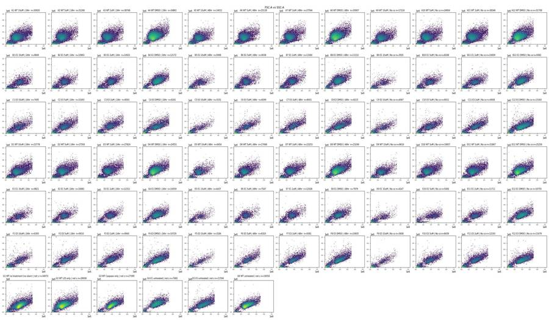
12
tool call · Read
{
"file_path": "/task/work/bl1_bl2.png"
}13
tool output
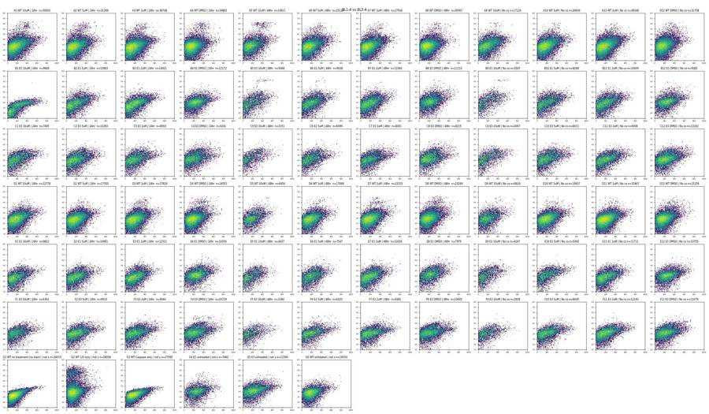
15
tool call · Read
{
"file_path": "/task/work/fsc_ssc_log.png"
}16
tool output
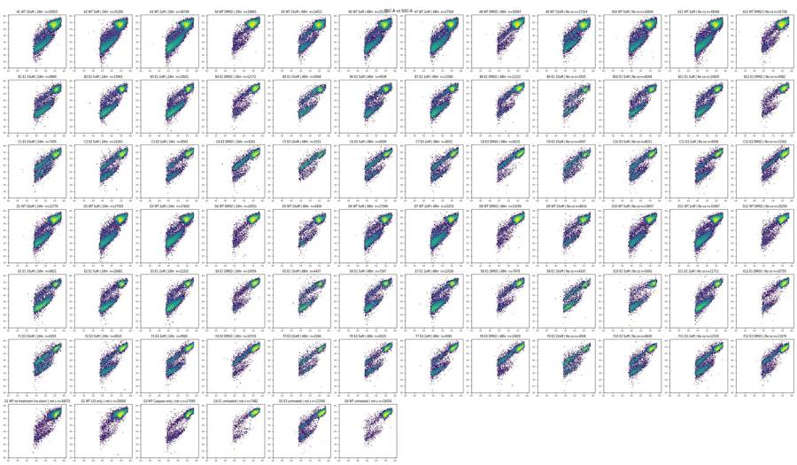
17
tool call · Read
{
"file_path": "/task/work/time_fsc.png"
}18
tool output
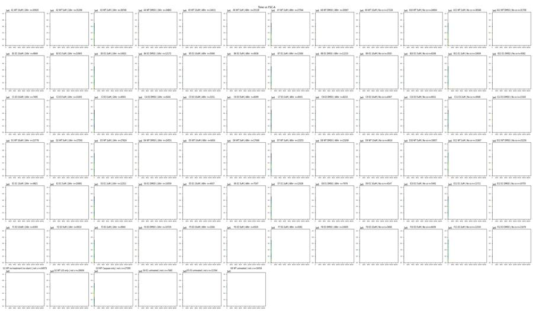
19
tool call · Bash
cd /task; cat > work/e2.py <<'EOF'
import pickle, numpy as np, pandas as pd
D=pickle.load(open('work/D.pkl','rb'))
for w in ['G1','G3','G2','G6','A12','B12','B9','A9','B1']:
df=D[w]
print(w, len(df))
for c in ['BL1-A','BL1-H','BL1-W','BL2-A','BL2-H','FSC-A','FSC-H','FSC-W','SSC-A','SSC-H','SSC-W']:
q=df[c].quantile([0,.01,.25,.5,.75,.99,.999,1]).values
print(' ',c,np.round(q,0))
print(' top BL1-A:', np.sort(df['BL1-A'].values)[-10:])
print(' top FSC-A:', np.sort(df['FSC-A'].values)[-5:], 'top FSC-H', np.sort(df['FSC-H'].values)[-5:])
print(' frac SSC-A sat', (df['SSC-A']>=1048575).mean(), 'frac FSC-A>690k', (df['FSC-A']>690000).mean(), 'FSC-H>1e6',(df['FSC-H']>=1048575).mean())
EOF
python work/e2.py20
tool output
G1 34073 BL1-A [ 4. 18. 82. 131. 194. 437. 605. 773.] BL1-H [ 21. 48. 86. 109. 138. 276. 386. 570.] BL1-W [0. 0. 0. 0. 0. 0. 0. 0.] BL2-A [-940. -51. 255. 406. 610. 1782. 2657. 4715.] BL2-H [2.000e+00 6.000e+01 1.910e+02 2.740e+02 3.930e+02 1.117e+03 1.647e+03 2.473e+03] FSC-A [ 20992. 33207. 318328. 353726. 402765. 649460. 701043. 710099.] FSC-H [ 25034. 31342. 158613. 174051. 191900. 294752. 340323. 414202.] FSC-W [ 40. 66. 139. 150. 157. 199. 282. 322.] SSC-A [ -63578. 3382. 159437. 201166. 251119. 453167. 621557. 1048575.] SSC-H [ 0. 3427. 97832. 118432. 142195. 235309. 312789. 947353.] SSC-W [ 0. 33. 125. 130. 136. 183. 268. 322.] top BL1-A: [680. 688. 695. 701. 701. 717. 730. 732. 753. 773.] top FSC-A: [707504. 708111. 708207. 708744. 710099.] top FSC-H [370463. 370775. 371855. 388427. 414202.] frac SSC-A sat 8.804625363190796e-05 frac FSC-A>690k 0.0027881313650104187 FSC-H>1e6 0.0 G3 27095 BL1-A [ 4. 23. 107. 167. 240. 500. 646. 769.] BL1-H [ 21. 51. 99. 127. 161. 312. 425. 577.] BL1-W [0. 0. 0. 0. 0. 0. 0. 0.] BL2-A [-371. -57. 292. 465. 681. 1735. 2508. 3208.] BL2-H [ 0. 75. 221. 310. 432. 1082. 1560. 2208.] FSC-A [ 15526. 31857. 325980. 360762. 413030. 650545. 701545. 710871.] FSC-H [ 25211. 30488. 164300. 178683. 201264. 300290. 345559. 379555.] FSC-W [ 37. 64. 141. 151. 157. 190. 280. 313.] SSC-A [ -2373. 2728. 159156. 199627. 248128. 424055. 543826. 1048575.] SSC-H [2.030000e+02 2.845000e+03 9.792200e+04 1.176540e+05 1.401610e+05 2.257350e+05 2.968300e+05 1.048575e+06] SSC-W [ 0. 29. 125. 130. 135. 171. 262. 300.] top BL1-A: [711. 712. 715. 726. 741. 744. 751. 753. 766. 769.] top FSC-A: [707526. 707829. 709946. 710407. 710871.] top FSC-H [370450. 371904. 372016. 374048. 379555.] frac SSC-A sat 7.381435689241557e-05 frac FSC-A>690k 0.003137110167927662 FSC-H>1e6 0.0 G2 28006 BL1-A [ 4. 16. 85. 140. 205. 449. 611. 826.] BL1-H [ 20. 49. 90. 114. 144. 276. 383. 724.] BL1-W [0. 0. 0. 0. 0. 0. 0. 0.] BL2-A [-3.43570e+04 -1.16900e+03 9.70000e+01 6.40000e+02 1.55700e+03 1.16359e+05 2.50454e+05 4.69842e+05] BL2-H [ 0. 208. 571. 745. 1025. 61313. 105900. 197842.] FSC-A [ 17677. 35598. 244806. 291545. 354810. 623889. 694785. 712910.] FSC-H [ 25181. 32000. 120436. 148003. 181306. 300566. 354403. 396198.] FSC-W [ 42. 66. 118. 127. 142. 213. 282. 375.] SSC-A [ -65536. 4465. 167945. 211294. 265539. 493307. 679623. 1048575.] SSC-H [ 0. 4349. 101452. 122162. 146369. 235074. 325503. 1048575.] SSC-W [ 0. 37. 124. 128. 134. 219. 280. 353.] top BL1-A: [682. 685. 692. 702. 714. 715. 725. 733. 737. 826.] top FSC-A: [707051. 707204. 709352. 711413. 712910.] top FSC-H [380406. 381177. 385074. 386461. 396198.] frac SSC-A sat 0.00010711990287795472 frac FSC-A>690k 0.0012854388345354567 FSC-H>1e6 0.0 G6 16054 BL1-A [ 4. 22. 115. 178. 254. 516. 672. 796.] BL1-H [ 19. 54. 104. 132. 166. 307. 414. 602.] BL1-W [0. 0. 0. 0. 0. 0. 0. 0.] BL2-A [-31439. -685. 190. 588. 1085. 5032. 13614. 40168.] BL2-H [ 0. 181. 456. 583. 737. 2646. 7491. 33013.] FSC-A [ 15946. 33696. 283686. 326756. 397050. 648060. 700554. 709508.] FSC-H [ 25039. 30992. 139548. 165114. 201820. 320156. 368240. 410621.] FSC-W [ 38. 67. 127. 142. 152. 193. 286. 375.] SSC-A [ -2449. 3843. 168462. 210736. 262711. 448647. 584219. 1048575.] SSC-H [ 0. 3638. 101365. 121311. 144064. 226888. 284182. 993008.] SSC-W [ 0. 34. 125. 129. 135. 182. 266. 375.] top BL1-A: [704. 709. 718. 728. 739. 755. 773. 781. 791. 796.] top FSC-A: [704665. 706856. 706950. 707428. 709508.] top FSC-H [398327. 400758. 405430. 405791. 410621.] frac SSC-A sat 0.00012457954403886882 frac FSC-A>690k 0.0023670113367385073 FSC-H>1e6 0.0 A12 31708 BL1-A [ 4. 18. 100. 161. 235. 493. 654. 787.] BL1-H [ 27. 52. 98. 126. 159. 308. 401. 509.] BL1-W [0. 0. 0. 0. 0. 0. 0. 0.] BL2-A [-2.19110e+04 -1.15800e+03 8.10000e+01 5.65000e+02 1.22700e+03 1.32950e+04 7.11100e+04 1.47803e+05] BL2-H [ 0. 182. 544. 713. 925. 6570. 47604. 86011.] FSC-A [ 1589. 31021. 240150. 289891. 356360. 634910. 699581. 710978.] FSC-H [ 25119. 29471. 116406. 146774. 180323. 301964. 354839. 426330.] FSC-W [ 36. 63. 118. 127. 144. 212. 285. 375.] SSC-A [ -43201. 3459. 175748. 229642. 295093. 547563. 739581. 1048575.] SSC-H [ 0. 3538. 106645. 131136. 158756. 251519. 321437. 636353.] SSC-W [ 0. 33. 124. 129. 136. 215. 280. 352.] top BL1-A: [716. 719. 724. 733. 737. 741. 743. 745. 755. 787.] top FSC-A: [707924. 708539. 708564. 710600. 710978.] top FSC-H [390236. 391085. 394754. 411063. 426330.] frac SSC-A sat 6.307556452630251e-05 frac FSC-A>690k 0.0019553425003153778 FSC-H>1e6 0.0 B12 9382 BL1-A [ 4. 16. 144. 232. 325. 604. 716. 812.] BL1-H [ 29. 50. 122. 163. 211. 384. 532. 568.] BL1-W [0. 0. 0. 0. 0. 0. 0. 0.] BL2-A [-15603. -778. 432. 1024. 1852. 13613. 42641. 124462.] BL2-H [ 0. 163. 589. 788. 1054. 7814. 22978. 82631.] FSC-A [ 20769. 28131. 271862. 356780. 433007. 661338. 699196. 707410.] FSC-H [ 25152. 26703. 135495. 185372. 226829. 329964. 371868. 412219.] FSC-W [ 46. 58. 120. 133. 151. 185. 250. 375.] SSC-A [ -54859. 2673. 178920. 246169. 311469. 524796. 653635. 1048575.] SSC-H [ 0. 2629. 109126. 141102. 170381. 264407. 320830. 794503.] SSC-W [ 0. 29. 124. 131. 137. 180. 257. 372.] top BL1-A: [717. 719. 719. 720. 731. 731. 740. 766. 776. 812.] top FSC-A: [703640. 704098. 705284. 706666. 707410.] top FSC-H [384395. 384847. 405009. 407574. 412219.] frac SSC-A sat 0.00010658708164570453 frac FSC-A>690k 0.003730547857599659 FSC-H>1e6 0.0 B9 3505 BL1-A [ 4. 7. 69. 150. 288. 580. 705. 770.] BL1-H [ 27. 41. 82. 123. 206. 388. 473. 485. … [3,020 more characters not shown]
22
thinking
I've finished a first pass over all 78 files; the caspase channel (BL1) shows no positive population in any well, and B1 appears to have missed the dead-cell stain. Checking acquisition stability over time is next, before building the gates.
23
tool call · Bash
cd /task; cat > work/time.py <<'EOF'
import pickle, numpy as np, pandas as pd, matplotlib
matplotlib.use('Agg'); import matplotlib.pyplot as plt
D=pickle.load(open('work/D.pkl','rb'))
lay = pd.read_csv('inputs/plate_layout.csv')
fig,axs=plt.subplots(7,12,figsize=(36,21))
for ax in axs.flat: ax.axis('off')
rows=[]
for w,df in D.items():
ax=axs['ABCDEFG'.index(w[0]), int(w[1:])-1]; ax.axis('on')
t=df['Time'].values
h,e=np.histogram(t,bins=np.arange(0,17.5,0.5))
ax.step(e[:-1],h,where='post'); ax.set_title(f"{w} n={len(df)}",fontsize=9)
ax2=ax.twinx();
# median FSC-A per bin
b=np.digitize(t,e)-1
med=[np.median(df['FSC-A'].values[b==i]) if (b==i).sum()>5 else np.nan for i in range(len(h))]
medb=[np.median(df['BL2-A'].values[b==i]) if (b==i).sum()>5 else np.nan for i in range(len(h))]
ax2.plot(e[:-1]+.25,med,'r-',lw=.8); ax2.set_ylim(0,6e5)
hh=h[:int(t.max()/0.5)]
gaps=np.diff(np.sort(t))
rows.append(dict(well=w,n=len(t),tmin=t.min(),tmax=t.max(),maxgap=gaps.max(),cv_rate=hh.std()/hh.mean(),minbin=hh.min(),maxbin=hh.max(),
first_half=(t<t.max()/2).mean(), monotone=(np.diff(t)>=0).all()))
fig.tight_layout(); fig.savefig('work/time.png',dpi=60)
o=pd.DataFrame(rows); pd.set_option('display.width',250); pd.set_option('display.max_rows',200)
print(o.round(3).to_string())
EOF
python work/time.py24
tool call · Read
{
"file_path": "/task/work/time.png"
}25
tool output
well n tmin tmax maxgap cv_rate minbin maxbin first_half monotone 0 A1 30920 0.014 16.721 0.006 0.165 597 1240 0.484 True 1 A2 31266 0.014 16.571 0.015 0.215 361 1291 0.524 True 2 A3 38748 0.014 16.778 0.004 0.129 919 1461 0.485 True 3 A4 34861 0.015 16.734 0.006 0.214 702 1523 0.467 True 4 A5 14011 0.016 16.581 0.027 0.170 247 593 0.502 True 5 A6 25118 0.014 16.726 0.006 0.158 551 1012 0.480 True 6 A7 27544 0.015 16.495 0.009 0.103 622 1041 0.511 True 7 A8 30067 0.016 15.853 0.007 0.201 686 1345 0.478 True 8 A9 17224 0.016 16.515 0.027 0.176 192 659 0.522 True 9 A10 24604 0.014 16.639 0.007 0.149 558 961 0.492 True 10 A11 38346 0.013 16.331 0.005 0.177 837 1735 0.503 False 11 A12 31708 0.014 16.608 0.057 0.227 112 1333 0.528 True 12 B1 9849 0.014 16.792 0.015 0.101 237 360 0.497 True 13 B2 10963 0.015 16.731 0.034 0.143 146 400 0.513 True 14 B3 14921 0.014 16.753 0.025 0.134 218 536 0.516 True 15 B4 12172 0.015 16.570 0.062 0.228 83 555 0.511 True 16 B5 5068 0.015 16.550 0.091 0.191 25 198 0.513 True 17 B6 9638 0.014 16.830 0.077 0.166 117 379 0.516 True 18 B7 13360 0.014 16.719 0.032 0.170 127 529 0.514 True 19 B8 11210 0.014 16.671 0.107 0.245 35 487 0.521 True 20 B9 3505 0.026 16.823 0.090 0.182 35 140 0.521 True 21 B10 8268 0.014 16.540 0.069 0.213 37 336 0.518 True 22 B11 10609 0.015 16.705 0.014 0.125 262 398 0.489 True 23 B12 9382 0.015 16.354 0.096 0.244 79 432 0.518 True 24 C1 7495 0.019 16.445 0.065 0.174 97 309 0.529 True 25 C2 10263 0.015 16.756 0.161 0.238 31 429 0.526 True 26 C3 8563 0.014 16.210 0.065 0.249 50 431 0.548 False 27 C4 9241 0.014 16.738 0.027 0.178 180 367 0.471 True 28 C5 3151 0.014 15.847 0.037 0.137 75 128 0.480 True 29 C6 6099 0.017 16.406 0.128 0.205 51 266 0.528 True 30 C7 8001 0.018 15.962 0.033 0.159 163 345 0.498 True 31 C8 8215 0.015 16.038 0.102 0.250 18 368 0.510 True 32 C9 4067 0.015 16.742 0.045 0.144 84 155 0.492 True 33 C10 8011 0.018 16.063 0.060 0.249 26 349 0.516 True 34 C11 9008 0.019 15.913 0.020 0.168 218 383 0.489 True 35 C12 13163 0.021 16.730 0.380 0.288 9 577 0.533 True 36 D1 22778 0.014 16.576 0.154 0.279 33 1034 0.523 True 37 D2 27593 0.014 16.720 0.011 0.175 548 1117 0.482 True 38 D3 27824 0.014 16.714 0.006 0.133 646 1053 0.487 True 39 D4 24551 0.014 16.284 0.013 0.225 406 1061 0.482 False 40 D5 6454 0.015 16.346 0.193 0.249 27 294 0.520 True 41 D6 17066 0.014 16.372 0.076 0.223 84 708 0.526 True 42 D7 23253 0.015 16.449 0.132 0.213 104 972 0.525 True 43 D8 23299 0.016 16.660 0.047 0.225 453 996 0.477 True 44 D9 8616 0.015 15.873 0.021 0.159 201 365 0.484 True 45 D10 19657 0.014 15.928 0.009 0.154 491 817 0.474 True 46 D11 31867 0.014 16.691 0.006 0.151 747 1277 0.470 True 47 D12 25256 0.014 16.702 0.017 0.175 577 1046 0.491 True 48 E1 9821 0.014 16.765 0.014 0.090 244 357 0.486 True 49 E2 10681 0.019 16.762 0.020 0.110 268 401 0.498 True 50 E3 12311 0.015 16.697 0.017 0.112 295 463 0.516 True 51 E4 10059 0.018 16.771 0.020 0.227 200 428 0.446 True 52 E5 4437 0.014 16.629 0.026 0.126 100 173 0.489 True 53 E6 7547 0.015 16.611 0.032 0.129 143 293 0.497 True 54 E7 12028 0.014 15.928 0.014 0.142 303 481 0.473 True 55 E8 7979 0.018 16.644 0.056 0.218 79 366 0.504 True 56 E9 4147 0.014 16.501 0.035 0.146 53 159 0.521 True 57 E10 5492 0.540 16.508 0.550 0.298 0 237 0.445 True 58 E11 11711 0.015 15.912 0.013 0.120 282 464 0.486 True 59 E12 10755 0.015 15.860 0.016 0.205 209 493 0.504 True 60 F1 6393 0.021 16.710 0.024 0.134 143 241 0.487 True 61 F2 9910 0.015 16.619 0.072 0.204 88 410 0.485 True 62 F3 9940 0.017 15.886 0.022 0.198 216 466 0.468 True 63 F4 10729 0.014 16.326 0.108 0.248 32 548 0.539 False 64 F5 3184 0.026 16.301 0.052 0.206 55 138 0.510 True 65 F6 6320 0.015 16.815 0.027 0.179 134 289 0.475 True 66 F7 9381 0.016 16.684 0.018 0.149 219 383 0.472 True 67 F8 10605 0.016 16.653 0.149 0.257 24 475 0.523 True 68 F9 3608 0.019 15.814 0.052 0.155 90 167 0.504 True 69 F10 8439 0.017 16.746 0.021 0.159 … [714 more characters not shown]
26
tool output
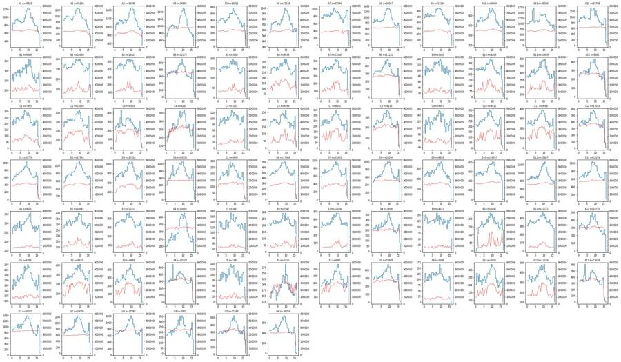
28
tool call · Bash
cd /task; cat > work/p2.py <<'EOF'
import pickle, numpy as np, pandas as pd, matplotlib
matplotlib.use('Agg'); import matplotlib.pyplot as plt
D=pickle.load(open('work/D.pkl','rb'))
lay = pd.read_csv('inputs/plate_layout.csv').set_index('well')
groups={}
for w in D:
r=lay.loc[w]
if w[0]=='G': k=w+' '+r['sample'][:14]
else: k=r.cell_line+' '+('DMSO' if r.camptothecin=='DMSO' else 'CPT')
groups.setdefault(k,[]).append(D[w])
keys=list(groups)
fig,axs=plt.subplots(3,len(keys),figsize=(5*len(keys),15))
for j,k in enumerate(keys):
df=pd.concat(groups[k])
axs[0,j].hist2d(df['FSC-A'],df['SSC-A'],bins=200,range=[[0,7.5e5],[0,7e5]],norm=matplotlib.colors.LogNorm()); axs[0,j].set_title(k)
axs[1,j].hist2d(df['FSC-A'],df['FSC-H'],bins=200,range=[[0,7.5e5],[0,4.5e5]],norm=matplotlib.colors.LogNorm())
axs[2,j].hist2d(df['FSC-A'],df['FSC-W'],bins=200,range=[[0,7.5e5],[0,400]],norm=matplotlib.colors.LogNorm())
for a in axs[:,j]: a.grid(alpha=.3)
fig.tight_layout(); fig.savefig('work/pooled.png',dpi=55)
EOF
python work/p2.py29
tool call · Read
{
"file_path": "/task/work/pooled.png"
}30
tool output
(Bash completed with no output)
31
tool output
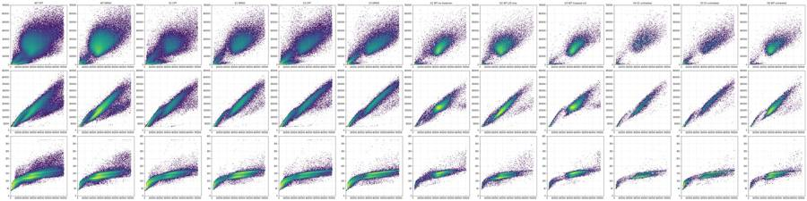
33
tool call · Bash
cd /task; cat > work/p3.py <<'EOF'
import pickle, numpy as np, pandas as pd, matplotlib
matplotlib.use('Agg'); import matplotlib.pyplot as plt
D=pickle.load(open('work/D.pkl','rb'))
lay = pd.read_csv('inputs/plate_layout.csv').set_index('well')
groups={}
for w in D:
r=lay.loc[w]
if w[0]=='G': continue
k=r.cell_line+' '+('DMSO' if r.camptothecin=='DMSO' else 'CPT')
groups.setdefault(k,[]).append(D[w])
keys=list(groups)
fig,axs=plt.subplots(2,3,figsize=(21,14))
for ax,k in zip(axs.T.flat,keys):
df=pd.concat(groups[k])
ax.hist2d(df['FSC-A'],df['SSC-A'],bins=250,range=[[0,7.5e5],[0,7e5]],norm=matplotlib.colors.LogNorm()); ax.set_title(k)
ax.set_xticks(np.arange(0,7.5e5,5e4)); ax.set_yticks(np.arange(0,7e5,5e4)); ax.tick_params(labelsize=7,rotation=45); ax.grid(alpha=.4)
fig.tight_layout(); fig.savefig('work/pooled_scatter.png',dpi=70)
fig,axs=plt.subplots(2,3,figsize=(21,14))
for ax,k in zip(axs.T.flat,keys):
df=pd.concat(groups[k])
ax.hist2d(df['FSC-A'],df['FSC-H'],bins=250,range=[[0,7.5e5],[0,4.5e5]],norm=matplotlib.colors.LogNorm()); ax.set_title(k)
ax.set_xticks(np.arange(0,7.5e5,5e4)); ax.set_yticks(np.arange(0,4.5e5,5e4)); ax.tick_params(labelsize=7,rotation=45); ax.grid(alpha=.4)
fig.tight_layout(); fig.savefig('work/pooled_sing.png',dpi=70)
EOF
python work/p3.py34
tool call · Read
{
"file_path": "/task/work/pooled_scatter.png"
}35
tool call · Read
{
"file_path": "/task/work/pooled_sing.png"
}36
tool output
(Bash completed with no output)
37
tool output
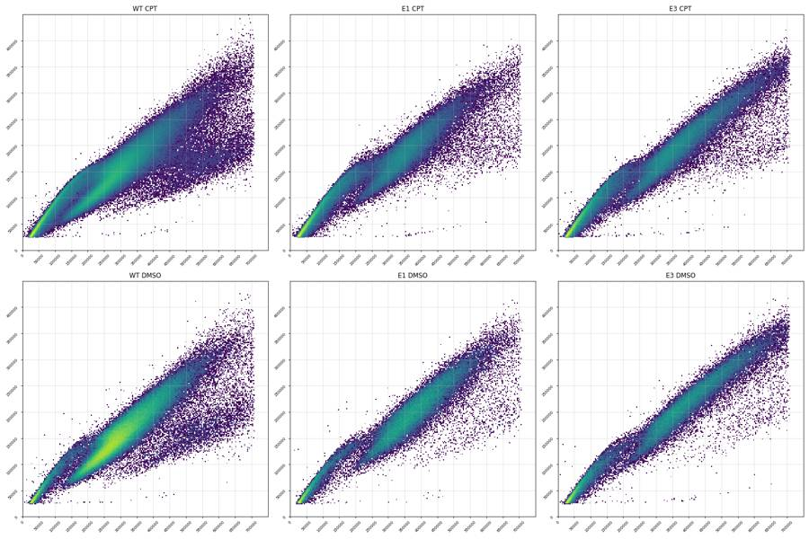
38
tool output
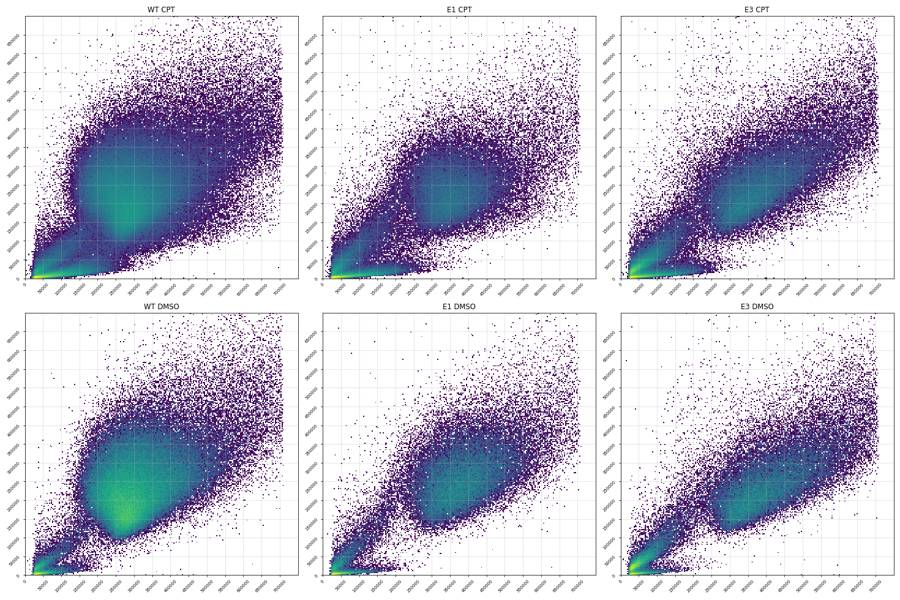
40
tool call · Bash
cd /task; cat > work/g1.py <<'EOF'
import pickle, numpy as np, pandas as pd, matplotlib
matplotlib.use('Agg'); import matplotlib.pyplot as plt
from matplotlib.path import Path
D=pickle.load(open('work/D.pkl','rb'))
lay = pd.read_csv('inputs/plate_layout.csv').set_index('well')
cells_poly=[(115e3,100e3),(115e3,320e3),(250e3,560e3),(450e3,760e3),(720e3,760e3),(720e3,220e3),(180e3,75e3)]
P=Path(cells_poly)
G={}
for w,df in D.items():
m=P.contains_points(df[['FSC-A','SSC-A']].values)
G[w]=df[m]
pickle.dump(G,open('work/G.pkl','wb'))
# ratio histograms
fig,axs=plt.subplots(2,4,figsize=(24,10))
for ax,ws in zip(axs.flat,[['A4','A8','A12','D4','D8','D12'],['A1','A5','A9','D1','D5','D9'],['B4','B8','B12','E4','E8','E12'],['B1','B5','B9','E1','E5','E9'],['C4','C8','C12','F4','F8','F12'],['C1','C5','C9','F1','F5','F9'],['G1','G2','G3'],['G4','G5','G6']]):
df=pd.concat([G[w] for w in ws])
ax.hist2d(df['FSC-A'],df['FSC-H']/df['FSC-A'],bins=200,range=[[1e5,7.2e5],[0.2,1.1]],norm=matplotlib.colors.LogNorm()); ax.set_title(str(ws)); ax.grid(alpha=.4)
ax.set_yticks(np.arange(0.2,1.1,0.05))
fig.tight_layout(); fig.savefig('work/ratio.png',dpi=60)
EOF
python work/g1.py41
tool call · Read
{
"file_path": "/task/work/ratio.png"
}42
tool output
(Bash completed with no output)
43
tool output
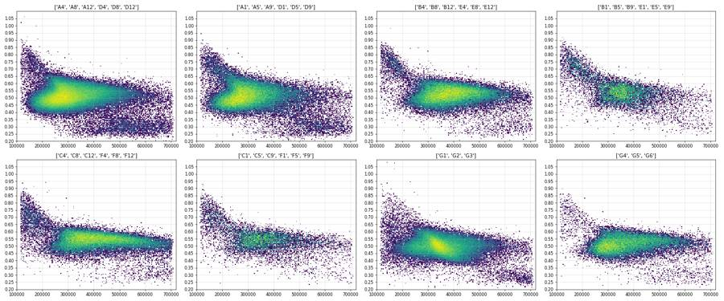
45
agent
Acquisition traces look stable (no clogs; a few wells thin out in the last second). I'm now tuning the scatter and singlet gates, then moving to the dead-cell and caspase channels.
46
tool call · Bash
cd /task; cat > work/g2.py <<'EOF'
import pickle, numpy as np, pandas as pd, matplotlib
matplotlib.use('Agg'); import matplotlib.pyplot as plt
from matplotlib.path import Path
G=pickle.load(open('work/G.pkl','rb'))
lay = pd.read_csv('inputs/plate_layout.csv').set_index('well')
SP=Path([(115e3,46e3),(720e3,288e3),(720e3,475e3),(115e3,72.5e3)])
S={w:df[SP.contains_points(df[['FSC-A','FSC-H']].values)] for w,df in G.items()}
pickle.dump(S,open('work/S.pkl','wb'))
def asinh(x,c=150): return np.arcsinh(x/c)
ticks=[0,100,300,1000,3000,1e4,3e4,1e5,3e5]
fig,axs=plt.subplots(7,12,figsize=(36,21))
for ax in axs.flat: ax.axis('off')
for w,df in S.items():
ax=axs['ABCDEFG'.index(w[0]), int(w[1:])-1]; ax.axis('on')
ax.hist(asinh(df['BL2-A']),bins=150,range=(asinh(-1000),asinh(5e5)),histtype='step')
ax.set_yscale('log'); ax.set_xticks([asinh(t) for t in ticks]); ax.set_xticklabels(['0','100','300','1k','3k','10k','30k','100k','300k'],fontsize=6)
ax.set_title(f"{w} {lay.loc[w,'sample']} n={len(df)}",fontsize=9); ax.grid(alpha=.3)
fig.tight_layout(); fig.savefig('work/bl2_hist.png',dpi=60)
fig,axs=plt.subplots(7,12,figsize=(36,21))
for ax in axs.flat: ax.axis('off')
for w,df in S.items():
ax=axs['ABCDEFG'.index(w[0]), int(w[1:])-1]; ax.axis('on')
ax.hist2d(df['BL1-A'],asinh(df['BL2-A']),bins=100,range=[[0,900],[asinh(-1000),asinh(5e5)]],norm=matplotlib.colors.LogNorm())
ax.set_yticks([asinh(t) for t in ticks]); ax.set_yticklabels(['0','100','300','1k','3k','10k','30k','100k','300k'],fontsize=6)
ax.set_title(f"{w} {lay.loc[w,'sample']} n={len(df)}",fontsize=9); ax.grid(alpha=.3)
fig.tight_layout(); fig.savefig('work/bl12_sing.png',dpi=60)
rows=[]
for w,df in S.items():
b=df['BL2-A']; a=df['BL1-A']
rows.append(dict(well=w,sample=lay.loc[w,'sample'],cm=lay.loc[w,'conditioned_media'][:4],n_all=None,cells=len(G[w]),sing=len(df),
bl2_med=b.median(),bl2_p90=b.quantile(.9),bl2_p95=b.quantile(.95),f3k=(b>3000).mean()*100,f5k=(b>5000).mean()*100,f10k=(b>10000).mean()*100,
bl1_med=a.median(),bl1_p95=a.quantile(.95),bl1_p99=a.quantile(.99),fsc_med=df['FSC-A'].median()))
o=pd.DataFrame(rows); pd.set_option('display.width',250); pd.set_option('display.max_rows',200)
print(o.round(1).to_string())
EOF
python work/g2.py47
tool call · Read
{
"file_path": "/task/work/bl2_hist.png"
}48
tool call · Read
{
"file_path": "/task/work/bl12_sing.png"
}49
tool output
well sample cm n_all cells sing bl2_med bl2_p90 bl2_p95 f3k f5k f10k bl1_med bl1_p95 bl1_p99 fsc_med 0 A1 WT 10uM 24hr None 20299 17990 520.0 2159.0 3324.5 5.8 2.6 1.3 177.0 414.5 522.1 284263.5 1 A2 WT 5uM 24hr None 19803 18233 452.0 1839.8 2906.4 4.8 2.3 1.3 173.0 398.0 505.7 281785.0 2 A3 WT 2uM 24hr None 21176 19566 445.0 1780.5 2731.8 4.3 1.9 0.9 170.0 396.0 500.0 284163.5 3 A4 WT DMSO 24hr None 32542 30686 372.0 1596.5 2366.5 3.5 1.8 1.0 159.0 357.0 465.0 287962.0 4 A5 WT 10uM 48hr None 9017 7882 564.5 2387.0 4565.3 7.7 4.4 2.5 190.0 431.0 527.2 290403.5 5 A6 WT 5uM 48hr None 16333 15015 511.0 1954.0 3284.5 5.7 2.8 1.2 172.0 397.0 505.0 281348.0 6 A7 WT 2uM 48hr None 16561 15296 499.0 1895.0 2983.5 4.9 2.2 0.9 172.0 396.0 496.0 282054.5 7 A8 WT DMSO 48hr None 27751 26224 425.0 1626.7 2369.0 3.4 1.8 0.8 160.0 361.0 468.0 291599.0 8 A9 WT 10uM No c None 10504 9273 635.0 2682.0 4019.8 8.5 2.9 0.7 209.0 447.0 536.3 292538.0 9 A10 WT 5uM No c None 16641 15263 607.0 2354.8 3704.0 7.1 2.8 1.0 186.0 415.0 511.0 286531.0 10 A11 WT 2uM No c None 24115 22373 557.0 2125.8 3295.8 5.8 2.5 0.8 179.0 403.0 506.0 288999.0 11 A12 WT DMSO No c None 29280 27332 538.0 2076.0 3211.8 5.6 2.6 1.1 163.0 364.0 478.0 293561.5 12 B1 E1 10uM 24hr None 3824 3214 749.0 1294.2 1596.7 0.1 0.0 0.0 282.0 524.0 623.7 378173.5 13 B2 E1 5uM 24hr None 4656 4189 973.0 2919.8 4240.6 9.3 3.5 0.6 261.0 491.0 593.4 352617.0 14 B3 E1 2uM 24hr None 6119 5619 1014.0 2468.4 3486.8 7.0 2.2 0.2 255.0 496.1 597.0 374185.0 15 B4 E1 DMSO 24hr None 10175 9539 941.0 2349.2 3242.2 5.7 2.1 0.5 242.0 471.0 591.2 402616.0 16 B5 E1 10uM 48hr None 2197 1696 1054.5 4019.0 6320.5 15.7 7.0 2.2 274.0 496.2 587.1 337456.5 17 B6 E1 5uM 48hr None 5209 4570 956.5 2814.8 4189.5 9.2 3.7 0.9 243.0 468.0 580.0 335785.0 18 B7 E1 2uM 48hr None 6193 5564 968.5 2844.2 4241.5 9.3 3.6 0.9 244.0 456.0 560.7 343193.5 19 B8 E1 DMSO 48hr None 8782 8093 1030.0 3235.8 5084.8 11.3 5.2 1.5 235.0 448.0 559.0 365094.0 20 B9 E1 10uM No c None 1333 1062 1583.5 5170.9 6814.0 26.3 10.9 2.3 322.5 524.0 614.8 355828.5 21 B10 E1 5uM No c None 3904 3506 1143.0 3654.5 5064.0 13.4 5.2 1.2 273.0 507.8 611.8 365733.0 22 B11 E1 2uM No c None 4988 4534 1095.5 3214.0 4797.3 11.5 4.5 0.7 258.0 494.0 600.7 367939.5 23 B12 E1 DMSO No c None 7833 7377 1048.0 2836.2 4211.2 9.0 3.8 1.1 254.0 487.2 599.5 380726.0 24 C1 E3 10uM 24hr None 3485 2992 1455.0 4746.3 6507.3 22.2 9.1 1.1 272.0 528.0 644.4 350480.5 25 C2 E3 5uM 24hr None 5635 5225 1127.0 3822.6 5995.6 14.2 6.7 1.6 243.0 505.0 630.5 361667.0 26 C3 E3 2uM 24hr None 4932 4671 1261.0 4207.0 6274.5 16.5 7.5 1.7 243.0 504.0 629.9 372913.0 27 C4 E3 DMSO 24hr None 6006 5535 1332.0 5316.2 8200.4 20.1 10.8 3.7 248.0 520.0 650.0 399655.0 28 C5 E3 10uM 48hr None 1257 971 1821.0 8380.0 10303.0 34.0 21.0 5.4 289.0 529.5 651.6 344852.0 29 C6 E3 5uM 48hr None 2988 2660 1377.5 4810.4 7236.4 18.5 9.5 2.1 258.0 517.1 636.4 362036.5 30 C7 E3 2uM 48hr None 4367 3976 1350.0 4188.0 6359.0 16.6 7.3 1.8 257.0 532.0 663.0 387714.0 31 C8 E3 DMSO 48hr None 5832 5391 1345.0 5389.0 8249.0 20.6 11.1 3.4 244.0 512.0 651.0 402787.0 32 C9 E3 10uM No c None 1729 1427 2014.0 6622.4 9078.8 33.8 17.4 3.5 298.0 534.0 668.4 359269.0 33 C10 E3 5uM No c None 4289 3921 1522.0 5261.0 7734.0 22.3 10.7 2.5 268.0 526.0 642.4 376308.0 34 C11 E3 2uM No c None 5116 4760 1336.5 3816.2 5542.8 15.5 6.2 1.0 262.0 522.0 631.4 400215.0 35 C12 E3 DMSO No c None 10333 9792 1217.5 4133.9 6484.5 15.7 7.6 1.9 241.0 508.0 645.0 410435.0 36 D1 WT 10uM 24hr None 14206 12684 645.0 2395.7 3505.8 6.6 2.6 0.6 193.0 418.0 515.0 299718.0 37 D2 WT 5uM 24hr None 17552 16417 498.0 1837.0 2718.0 4.3 1.8 0.5 185.0 395.0 496.0 290079.0 38 D3 WT 2uM 24hr None 15653 14825 578.0 2103.6 3187.6 5.6 2.4 1.0 193.0 405.0 508.8 291684.0 39 D4 WT DMSO 24hr None 22820 21697 529.0 1981.0 3207.0 5.4 2.8 1.2 180.0 389.0 496.0 306213.0 40 D5 WT 10uM 48hr None 4423 4029 622.0 2444.2 4160.2 7.6 … [5,375 more characters not shown]
50
tool output
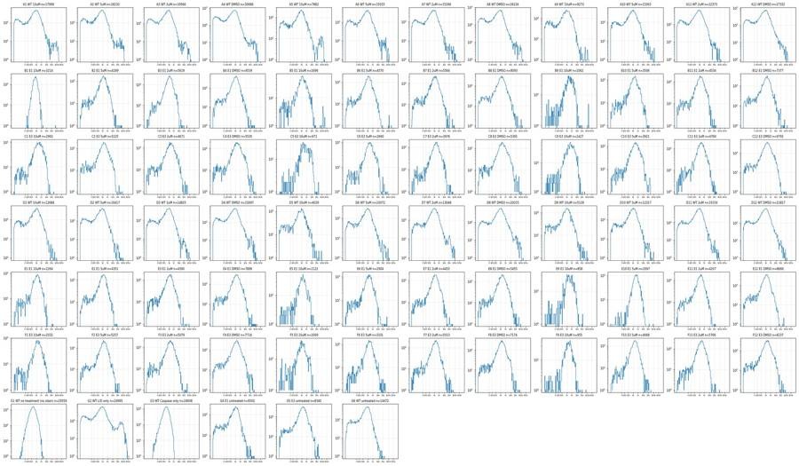
51
tool output
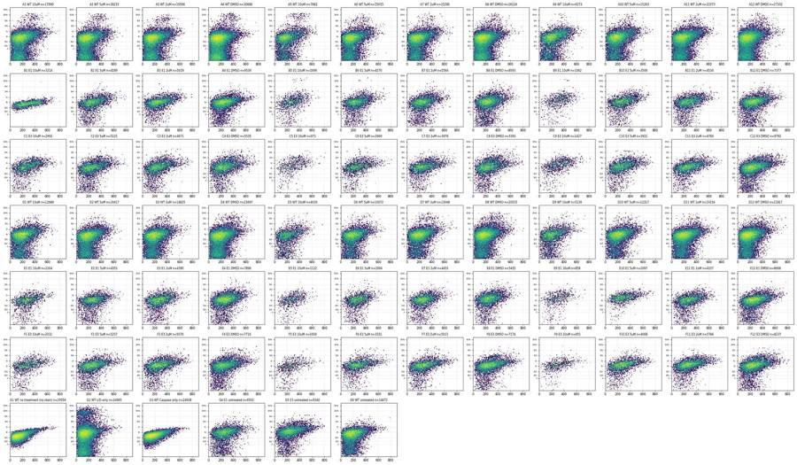
53
tool call · Bash
cd /task; cat > work/e10.py <<'EOF'
import pickle, numpy as np, pandas as pd, matplotlib
matplotlib.use('Agg'); import matplotlib.pyplot as plt
D=pickle.load(open('work/D.pkl','rb')); S=pickle.load(open('work/S.pkl','rb'))
ws=['E9','E10','E11','E12','B10','B1','G1','G4']
fig,axs=plt.subplots(4,len(ws),figsize=(5*len(ws),20))
A=lambda x: np.arcsinh(x/150)
for j,w in enumerate(ws):
df=D[w]; s=S[w]
axs[0,j].hist2d(df['FSC-A'],df['SSC-A'],bins=120,range=[[0,7.5e5],[0,7e5]],norm=matplotlib.colors.LogNorm()); axs[0,j].set_title(f'{w} all n={len(df)}')
axs[1,j].hist2d(s['BL1-A'],A(s['BL2-A']),bins=100,range=[[0,900],[A(-1000),A(3e5)]],norm=matplotlib.colors.LogNorm()); axs[1,j].set_title('singlets BL1 vs asinh BL2')
axs[2,j].hist2d(s['FSC-A'],A(s['BL2-A']),bins=100,range=[[1e5,7.2e5],[A(-1000),A(3e5)]],norm=matplotlib.colors.LogNorm()); axs[2,j].set_title('FSC-A vs BL2')
axs[3,j].scatter(df['Time'],df['FSC-A'],s=1,alpha=.3); axs[3,j].set_title('time vs FSC-A')
fig.tight_layout(); fig.savefig('work/e10.png',dpi=55)
for w in ws:
s=S[w]; print(w,len(D[w]),len(s), 'neg BL2 frac %.3f'%(s['BL2-A']<0).mean(), 'BL2 q', s['BL2-A'].quantile([.01,.05,.25,.5,.75,.95,.99]).round(0).values, 'FSC q', s['FSC-A'].quantile([.05,.5,.95]).round(0).values, 'SSC med', s['SSC-A'].median())
# fraction negative BL2 among singlets, all wells
print({w:round((S[w]['BL2-A']<0).mean()*100,1) for w in S})
EOF
python work/e10.py54
tool call · Read
{
"file_path": "/task/work/e10.png"
}55
tool output
E9 4147 858 neg BL2 frac 0.076 BL2 q [-1170. -172. 761. 1486. 2998. 6829. 10986.] FSC q [198654. 354527. 549008.] SSC med 203627.0
E10 5492 2097 neg BL2 frac 0.013 BL2 q [ -36. 446. 1159. 1804. 2682. 5505. 8702.] FSC q [275191. 459091. 631015.] SSC med 239322.0
E11 11711 4207 neg BL2 frac 0.067 BL2 q [-547. -89. 561. 1079. 1722. 4039. 8111.] FSC q [255591. 368482. 531194.] SSC med 232749.0
E12 10755 8666 neg BL2 frac 0.077 BL2 q [-554. -136. 504. 985. 1585. 3586. 7622.] FSC q [268163. 390014. 569785.] SSC med 258247.5
B10 8268 3506 neg BL2 frac 0.068 BL2 q [ -607. -100. 577. 1143. 1958. 5064. 10952.] FSC q [245292. 365733. 532245.] SSC med 225064.0
B1 9849 3214 neg BL2 frac 0.000 BL2 q [ 202. 311. 538. 749. 993. 1597. 2146.] FSC q [266022. 378174. 559629.] SSC med 224181.0
G1 34073 29559 neg BL2 frac 0.006 BL2 q [ 24. 117. 275. 417. 613. 1109. 1750.] FSC q [265432. 358011. 504880.] SSC med 204914.0
G4 7482 6502 neg BL2 frac 0.126 BL2 q [-789. -322. 304. 810. 1420. 2948. 7026.] FSC q [251250. 382705. 572494.] SSC med 284564.0
{'A1': 24.7, 'A2': 26.0, 'A3': 26.1, 'A4': 29.8, 'A5': 22.1, 'A6': 23.0, 'A7': 23.3, 'A8': 26.5, 'A9': 21.2, 'A10': 19.9, 'A11': 21.6, 'A12': 21.9, 'B1': 0.0, 'B2': 8.2, 'B3': 3.5, 'B4': 6.8, 'B5': 8.5, 'B6': 8.5, 'B7': 8.2, 'B8': 9.8, 'B9': 6.1, 'B10': 6.8, 'B11': 7.1, 'B12': 8.4, 'C1': 6.6, 'C2': 9.3, 'C3': 7.1, 'C4': 6.7, 'C5': 5.5, 'C6': 5.5, 'C7': 4.1, 'C8': 6.3, 'C9': 5.2, 'C10': 5.4, 'C11': 4.2, 'C12': 6.9, 'D1': 19.3, 'D2': 23.3, 'D3': 20.1, 'D4': 22.2, 'D5': 18.2, 'D6': 17.5, 'D7': 14.2, 'D8': 16.6, 'D9': 15.7, 'D10': 13.7, 'D11': 16.3, 'D12': 16.9, 'E1': 8.0, 'E2': 9.1, 'E3': 7.5, 'E4': 6.9, 'E5': 6.8, 'E6': 7.3, 'E7': 6.7, 'E8': 6.2, 'E9': 7.6, 'E10': 1.3, 'E11': 6.7, 'E12': 7.7, 'F1': 6.4, 'F2': 6.8, 'F3': 5.9, 'F4': 7.2, 'F5': 9.5, 'F6': 3.9, 'F7': 5.7, 'F8': 6.1, 'F9': 4.2, 'F10': 4.5, 'F11': 3.9, 'F12': 6.5, 'G1': 0.6, 'G2': 21.6, 'G3': 0.7, 'G4': 12.6, 'G5': 7.4, 'G6': 15.4}56
tool output
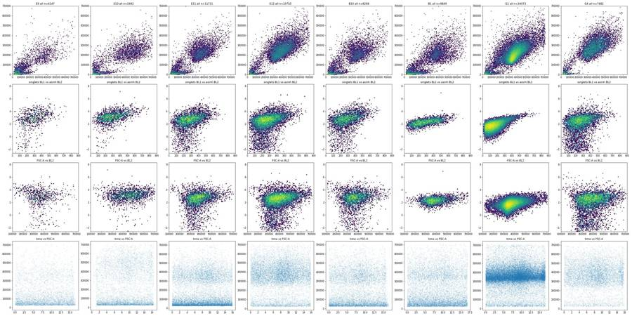
58
thinking
Two wells look anomalous (B1 lacks the dead-cell stain, E10 has an odd scatter/stain profile), and I'm setting the live/dead and caspase thresholds from the controls before writing the final gates.
59
tool call · Bash
cd /task; cat > work/thr.py <<'EOF'
import pickle, numpy as np, pandas as pd
S=pickle.load(open('work/S.pkl','rb'))
lay = pd.read_csv('inputs/plate_layout.csv').set_index('well')
edges=np.logspace(2.5,5.7,33)
def h(ws):
x=np.concatenate([S[w]['BL2-A'].values for w in ws]); c,_=np.histogram(x,edges); return c
wt=[w for w in S if w[0] in 'AD']; e1=[w for w in S if w[0] in 'BE' and w!='B1']; e3=[w for w in S if w[0] in 'CF']
print(pd.DataFrame({'lo':edges[:-1].round(0),'G2':h(['G2']),'G1':h(['G1']),'G3':h(['G3']),'WT':h(wt),'E1':h(e1),'E3':h(e3),'G6':h(['G6'])}).to_string())
# BL1 in dead cells
for ws,n in [(wt,'WT'),(e1,'E1'),(e3,'E3'),(['G2'],'G2')]:
x=pd.concat([S[w] for w in ws]); d=x[x['BL2-A']>10000]; l=x[x['BL2-A']<=10000]
print(n,'dead n',len(d),'BL1 med dead',d['BL1-A'].median(),'p99',d['BL1-A'].quantile(.99),'live med',l['BL1-A'].median(),'p99',l['BL1-A'].quantile(.99), 'dead FSC med',d['FSC-A'].median(), 'live FSC', l['FSC-A'].median())
# BL1 percentiles for live in controls
for w in ['G1','G2','G3','G6','G4','G5']:
x=S[w]; l=x[x['BL2-A']<=10000]['BL1-A']
print(w, l.quantile([.5,.9,.95,.99,.995,.999]).round(0).values, [(l>t).mean().round(4)*100 for t in (400,450,500,550,600)])
EOF
python work/thr.py60
tool output
lo G2 G1 G3 WT E1 E3 G6 0 316.0 1025 4329 3025 17079 3239 2781 765 1 398.0 1292 4707 3812 22166 4529 3795 1038 2 501.0 1568 4100 3915 26808 6112 5149 1228 3 631.0 1803 2937 3260 30953 8448 7212 1406 4 794.0 1819 1994 2046 33300 10450 9166 1463 5 1000.0 1707 1002 1141 31452 11993 11150 1437 6 1259.0 1444 545 571 26039 11874 11880 1002 7 1585.0 1066 320 263 18584 9655 11003 639 8 1995.0 685 103 80 12803 6885 8772 351 9 2512.0 508 29 22 8810 4606 6445 181 10 3162.0 336 3 1 5993 3103 4563 113 11 3981.0 286 1 0 4193 2314 3211 54 12 5012.0 223 0 0 2839 1633 2442 34 13 6310.0 187 0 0 1854 1066 1860 22 14 7943.0 133 0 0 1248 610 1430 13 15 10000.0 128 0 0 812 366 792 9 16 12589.0 96 0 0 532 198 403 3 17 15849.0 109 0 0 365 88 197 4 18 19953.0 115 0 0 375 46 95 2 19 25119.0 111 0 0 457 51 93 1 20 31623.0 148 0 0 411 34 93 0 21 39811.0 228 0 0 324 20 54 1 22 50119.0 215 0 0 237 19 33 0 23 63096.0 229 0 0 218 13 11 0 24 79433.0 203 0 0 196 9 6 0 25 100000.0 116 0 0 130 17 2 0 26 125893.0 50 0 0 36 10 0 0 27 158489.0 34 0 0 5 4 0 0 28 199526.0 9 0 0 0 0 0 0 29 251189.0 4 0 0 0 0 0 0 30 316228.0 2 0 0 0 0 0 0 31 398107.0 0 0 0 0 0 0 0 WT dead n 4098 BL1 med dead 340.0 p99 626.0299999999997 live med 177.0 p99 499.0 dead FSC med 268241.0 live FSC 292242.0 E1 dead n 875 BL1 med dead 410.0 p99 694.1199999999999 live med 256.0 p99 590.0 dead FSC med 354119.0 live FSC 366956.0 E3 dead n 1778 BL1 med dead 403.0 p99 737.46 live med 254.0 p99 642.0 dead FSC med 376471.0 live FSC 385224.5 G2 dead n 1797 BL1 med dead 143.0 p99 442.03999999999996 live med 143.0 p99 442.0 dead FSC med 195119.0 live FSC 301272.0 G1 [136. 264. 312. 437. 490. 599.] [1.6500000000000001, 0.8099999999999999, 0.44, 0.21, 0.1] G2 [143. 275. 324. 442. 492. 599.] [1.7500000000000002, 0.8699999999999999, 0.43, 0.21, 0.1] G3 [171. 320. 377. 497. 538. 640.] [3.83, 1.91, 0.9299999999999999, 0.36, 0.16] G6 [180. 330. 384. 505. 544. 665.] [4.01, 2.0500000000000003, 1.05, 0.44, 0.24] G4 [256. 429. 486. 598. 639. 722.] [13.99, 7.79, 4.14, 1.9, 0.96] G5 [249. 450. 520. 643. 686. 767.] [15.76, 9.9, 6.02, 3.58, 1.87]
62
tool call · Bash
cd /task; python - <<'EOF' import flowkit as fk, inspect print(fk.__version__) print(inspect.signature(fk.gates.PolygonGate.__init__)); print(inspect.signature(fk.gates.RectangleGate.__init__)); print(inspect.signature(fk.Dimension.__init__)) print(inspect.signature(fk.GatingStrategy.add_gate)); print(inspect.signature(fk.GatingStrategy.gate_sample)) print(inspect.signature(fk.Sample.__init__)) EOF
63
tool output
1.2.3 (self, gate_name, dimensions, vertices, use_complement=False) (self, gate_name, dimensions, use_complement=False) (self, dimension_id, compensation_ref='uncompensated', transformation_ref=None, range_min=None, range_max=None) (self, gate, gate_path, sample_id=None) (self, sample, cache_events=False, verbose=False) (self, fcs_path_or_data, sample_id=None, filename_as_id=False, channel_labels=None, compensation=None, null_channel_list=None, ignore_offset_error=False, ignore_offset_discrepancy=False, use_header_offsets=False, cache_original_events=False, subsample=10000)
65
tool call · Bash
cd /task; cat > work/pipeline.py <<'EOF'
import flowkit as fk, numpy as np, pandas as pd, warnings, pickle
warnings.filterwarnings('ignore')
OUT='/task/outputs/'
lay = pd.read_csv('/task/inputs/plate_layout.csv')
U='uncompensated'
gs=fk.GatingStrategy()
cells_v=[(115e3,100e3),(115e3,320e3),(250e3,560e3),(450e3,760e3),(720e3,760e3),(720e3,220e3),(180e3,75e3)]
sing_v=[(115e3,46e3),(720e3,288e3),(720e3,475e3),(115e3,72.5e3)]
LIVE_MAX=15000.; CASP_MIN=450.
gs.add_gate(fk.gates.PolygonGate('cells',[fk.Dimension('FSC-A',U),fk.Dimension('SSC-A',U)],[list(v) for v in cells_v]),gate_path=('root',))
gs.add_gate(fk.gates.PolygonGate('singlets',[fk.Dimension('FSC-A',U),fk.Dimension('FSC-H',U)],[list(v) for v in sing_v]),gate_path=('root','cells'))
gs.add_gate(fk.gates.RectangleGate('live',[fk.Dimension('BL2-A',U,range_max=LIVE_MAX)]),gate_path=('root','cells','singlets'))
gs.add_gate(fk.gates.RectangleGate('dead',[fk.Dimension('BL2-A',U,range_min=LIVE_MAX)]),gate_path=('root','cells','singlets'))
gs.add_gate(fk.gates.RectangleGate('caspase_pos',[fk.Dimension('BL1-A',U,range_min=CASP_MIN)]),gate_path=('root','cells','singlets','live'))
with open(OUT+'gates.xml','wb') as f: fk.export_gatingml(gs,f)
gs2=fk.parse_gating_xml(OUT+'gates.xml')
print(gs2.get_gate_ids())
pops=[('cells','cells','all_events'),('singlets','singlets','cells'),('live','live','singlets'),('dead','other','singlets'),('caspase_pos','marker_positive','live')]
rows=[]; stats=[]
for _,r in lay.iterrows():
s=fk.Sample('/task/inputs/raw/'+r.file, subsample=None) if False else fk.Sample('/task/inputs/raw/'+r.file)
res=gs2.gate_sample(s)
n=s.event_count
cnt={'all_events':n}
for p,_,_ in pops: cnt[p]=int(res.get_gate_membership(p).sum())
rep=res.report.set_index('gate_name')
for p,_,_ in pops: assert int(rep.loc[p,'count'])==cnt[p]
rows.append(dict(file=r.file,well=r.well,population='all_events',role='other',parent='none',count=n,pct_of_parent=''))
for p,role,par in pops:
rows.append(dict(file=r.file,well=r.well,population=p,role=role,parent=par,count=cnt[p],pct_of_parent=(100*cnt[p]/cnt[par]) if cnt[par] else ''))
ev=pd.DataFrame(s.get_events('raw'),columns=s.pnn_labels)
live=ev[res.get_gate_membership('live')]; sing=ev[res.get_gate_membership('singlets')]
stats.append(dict(well=r.well,live_bl1_median=live['BL1-A'].median(),live_bl1_p95=live['BL1-A'].quantile(.95),live_fsc_median=live['FSC-A'].median(),
live_bl2_median=live['BL2-A'].median(), sing_bl2_gt3k=(sing['BL2-A']>3000).mean()*100, sing_bl2_neg=(sing['BL2-A']<0).mean()*100,
tmin=ev['Time'].min(),tmax=ev['Time'].max()))
c=pd.DataFrame(rows)[['file','well','population','role','parent','count','pct_of_parent']]
c.to_csv(OUT+'counts.csv',index=False)
pd.DataFrame(stats).to_csv('/task/work/stats.csv',index=False)
w=c.pivot(index='well',columns='population',values='count')
w=w.loc[lay.well]
w['pct_cells']=100*w.cells/w.all_events; w['pct_sing']=100*w.singlets/w.cells; w['pct_live']=100*w.live/w.singlets; w['pct_casp']=100*w.caspase_pos/w.live
w=w.join(pd.DataFrame(stats).set_index('well')).join(lay.set_index('well')[['sample','conditioned_media']])
pd.set_option('display.width',300); pd.set_option('display.max_rows',200)
print(w.round(2).to_string())
w.to_csv('/task/work/wide.csv')
EOF
python work/pipeline.py66
tool output
[('cells', ('root',)), ('singlets', ('root', 'cells')), ('live', ('root', 'cells', 'singlets')), ('caspase_pos', ('root', 'cells', 'singlets', 'live')), ('dead', ('root', 'cells', 'singlets'))]
all_events caspase_pos cells dead live singlets pct_cells pct_sing pct_live pct_casp live_bl1_median live_bl1_p95 live_fsc_median live_bl2_median sing_bl2_gt3k sing_bl2_neg tmin tmax sample conditioned_media
well
A1 30920 544 20299 172 17818 17990 65.65 88.63 99.04 3.05 176.0 411.00 284611.5 509.0 5.84 24.70 0.01 16.72 WT 10uM 24hr conditioned media
A2 31266 429 19803 185 18048 18233 63.34 92.07 98.99 2.38 172.0 394.00 282057.0 442.5 4.76 26.02 0.01 16.57 WT 5uM 24hr conditioned media
A3 38748 429 21176 145 19421 19566 54.65 92.40 99.26 2.21 170.0 393.00 284529.0 439.0 4.31 26.05 0.01 16.78 WT 2uM 24hr conditioned media
A4 34861 377 32542 255 30431 30686 93.35 94.30 99.17 1.24 159.0 354.00 288235.0 364.0 3.49 29.81 0.02 16.73 WT DMSO 24hr conditioned media
A5 14011 269 9017 163 7718 7881 64.36 87.40 97.93 3.49 187.0 425.00 290652.0 544.0 7.66 22.13 0.02 16.58 WT 10uM 48hr conditioned media
A6 25118 343 16333 134 14881 15015 65.03 91.93 99.11 2.30 171.0 395.00 281594.0 501.0 5.69 22.97 0.01 16.73 WT 5uM 48hr conditioned media
A7 27544 336 16561 89 15207 15296 60.13 92.36 99.42 2.21 172.0 395.00 282432.0 495.0 4.92 23.29 0.02 16.50 WT 2uM 48hr conditioned media
A8 30067 329 27751 146 26078 26224 92.30 94.50 99.44 1.26 159.0 359.00 291775.5 420.0 3.39 26.51 0.02 15.85 WT DMSO 48hr conditioned media
A9 17224 440 10504 36 9237 9273 60.98 88.28 99.61 4.76 209.0 447.00 292764.0 631.0 8.54 21.21 0.02 16.52 WT 10uM No conditioned media
A10 24604 439 16641 103 15160 15263 67.64 91.72 99.33 2.90 185.0 414.00 286764.0 601.0 7.10 19.92 0.01 16.64 WT 5uM No conditioned media
A11 38346 556 24115 115 22258 22373 62.89 92.78 99.49 2.50 178.0 401.00 289124.0 552.0 5.79 21.63 0.01 16.33 WT 2uM No conditioned media
A12 31708 403 29280 177 27155 27332 92.34 93.35 99.35 1.48 162.0 360.00 293730.0 532.0 5.57 21.86 0.01 16.61 WT DMSO No conditioned media
B1 9849 490 3824 1 3213 3214 38.83 84.05 99.97 15.25 282.0 524.00 378163.0 749.0 0.12 0.00 0.01 16.79 E1 10uM 24hr conditioned media
B2 10963 373 4656 13 4176 4189 42.47 89.97 99.69 8.93 260.0 491.00 352647.0 970.0 9.31 8.16 0.02 16.73 E1 5uM 24hr conditioned media
B3 14921 496 6119 5 5614 5619 41.01 91.83 99.91 8.84 255.0 496.00 374234.5 1013.0 6.96 3.47 0.01 16.75 E1 2uM 24hr conditioned media
B4 12172 623 10175 14 9525 9539 83.59 93.75 99.85 6.54 242.0 470.00 402746.0 940.0 5.70 6.81 0.02 16.57 E1 DMSO 24hr conditioned media
B5 5068 154 2197 20 1676 1696 43.35 77.20 98.82 9.19 272.0 496.00 337934.0 1041.0 15.74 8.49 0.02 16.55 E1 10uM 48hr conditioned media
B6 9638 297 5209 14 4556 4570 54.05 87.73 99.69 6.52 242.0 467.00 335785.0 954.5 9.19 8.53 0.01 16.83 E1 5uM 48hr conditioned media
B7 13360 310 6193 18 5546 5564 46.35 89.84 99.68 5.59 244.0 456.00 343237.5 966.0 9.31 8.25 0.01 16.72 E1 2uM 48hr conditioned media
B8 11210 374 8782 57 8036 8093 78.34 92.15 99.30 4.65 234.0 445.00 365211.5 1022.0 11.29 9.80 0.01 16.67 E1 DMSO 48hr conditioned media
B9 3505 160 1333 14 1048 1062 38.03 79.67 9
… [14,993 more characters not shown]68
tool call · Bash
cd /task; cat > work/chk.py <<'EOF'
import pickle, numpy as np, pandas as pd
D=pickle.load(open('work/D.pkl','rb')); S=pickle.load(open('work/S.pkl','rb'))
W=pd.read_csv('work/wide.csv').set_index('well')
for w in ['B10','E10','E9','E11','E2','E6','B6','B2']:
s=S[w]; print(w, {c:round(s[c].median()) for c in ['FSC-A','FSC-H','FSC-W','SSC-A','SSC-H','SSC-W','BL1-A','BL1-H','BL2-A','BL2-H']}, 'BL2 IQR',round(s['BL2-A'].quantile(.75)-s['BL2-A'].quantile(.25)), 'p1',round(s['BL2-A'].quantile(.01)))
# E10 over time
d=D['E10']; print(d.groupby(pd.cut(d['Time'],[0,1,2,4,8,12,17]))[['FSC-A','SSC-A','BL2-A','BL1-A']].agg(['median','size']).round(0).to_string())
# all wells: per-well FSC median among live for E1 line
print(W.loc[[w for w in W.index if w[0] in 'BE'],['live_fsc_median','sing_bl2_neg','live_bl2_median','pct_casp']].T.round(1).to_string())
# debris BL1
from matplotlib.path import Path
P=Path([(115e3,100e3),(115e3,320e3),(250e3,560e3),(450e3,760e3),(720e3,760e3),(720e3,220e3),(180e3,75e3)])
for w in ['A12','A9','B12','B9','G1','G3']:
d=D[w]; m=P.contains_points(d[['FSC-A','SSC-A']].values); deb=d[~m]
print(w,'debris n',len(deb),'BL1 q50/99/max',deb['BL1-A'].quantile([.5,.99,1]).values,'BL2 q50/99',deb['BL2-A'].quantile([.5,.99]).values)
# end of run: events in final second relative to median rate
rows=[]
for w,d in D.items():
t=d['Time'].values; h,_=np.histogram(t,bins=np.arange(0,17.01,0.25));
nz=np.where(h>0)[0]; last=nz.max()
med=np.median(h[4:48]); low=h[:last+1]<0.25*med
# count trailing low bins
k=0
for i in range(last,-1,-1):
if low[i]: k+=1
else: break
rows.append((w,len(t),med*4,k*0.25, int(h[last-k+1:last+1].sum()) if k else 0))
r=pd.DataFrame(rows,columns=['well','n','rate_per_s','trailing_low_s','events_in_tail']); print(r[r.trailing_low_s>=0.75].to_string())
print((r.trailing_low_s>=0.75).sum(), (r.trailing_low_s>=0.5).sum())
EOF
python work/chk.py69
tool output
/task/work/chk.py:7: FutureWarning: The default of observed=False is deprecated and will be changed to True in a future version of pandas. Pass observed=False to retain current behavior or observed=True to adopt the future default and silence this warning.
d=D['E10']; print(d.groupby(pd.cut(d['Time'],[0,1,2,4,8,12,17]))[['FSC-A','SSC-A','BL2-A','BL1-A']].agg(['median','size']).round(0).to_string())
B10 {'FSC-A': 365733, 'FSC-H': 192569, 'FSC-W': 142, 'SSC-A': 225064, 'SSC-H': 131020, 'SSC-W': 131, 'BL1-A': 273, 'BL1-H': 180, 'BL2-A': 1143, 'BL2-H': 831} BL2 IQR 1380 p1 -607
E10 {'FSC-A': 459091, 'FSC-H': 246575, 'FSC-W': 152, 'SSC-A': 239322, 'SSC-H': 139684, 'SSC-W': 132, 'BL1-A': 284, 'BL1-H': 191, 'BL2-A': 1804, 'BL2-H': 934} BL2 IQR 1523 p1 -36
E9 {'FSC-A': 354527, 'FSC-H': 186224, 'FSC-W': 144, 'SSC-A': 203627, 'SSC-H': 123296, 'SSC-W': 128, 'BL1-A': 292, 'BL1-H': 192, 'BL2-A': 1486, 'BL2-H': 902} BL2 IQR 2237 p1 -1170
E11 {'FSC-A': 368482, 'FSC-H': 198491, 'FSC-W': 142, 'SSC-A': 232749, 'SSC-H': 135257, 'SSC-W': 130, 'BL1-A': 271, 'BL1-H': 183, 'BL2-A': 1079, 'BL2-H': 782} BL2 IQR 1162 p1 -547
E2 {'FSC-A': 345700, 'FSC-H': 182173, 'FSC-W': 138, 'SSC-A': 231544, 'SSC-H': 134730, 'SSC-W': 130, 'BL1-A': 260, 'BL1-H': 176, 'BL2-A': 923, 'BL2-H': 738} BL2 IQR 1062 p1 -654
E6 {'FSC-A': 332103, 'FSC-H': 172300, 'FSC-W': 132, 'SSC-A': 250196, 'SSC-H': 144276, 'SSC-W': 131, 'BL1-A': 266, 'BL1-H': 177, 'BL2-A': 1071, 'BL2-H': 788} BL2 IQR 1238 p1 -605
B6 {'FSC-A': 335785, 'FSC-H': 174655, 'FSC-W': 136, 'SSC-A': 242221, 'SSC-H': 141022, 'SSC-W': 131, 'BL1-A': 243, 'BL1-H': 169, 'BL2-A': 956, 'BL2-H': 751} BL2 IQR 1132 p1 -640
B2 {'FSC-A': 352617, 'FSC-H': 181458, 'FSC-W': 144, 'SSC-A': 236186, 'SSC-H': 138691, 'SSC-W': 132, 'BL1-A': 261, 'BL1-H': 178, 'BL2-A': 973, 'BL2-H': 720} BL2 IQR 1193 p1 -616
FSC-A SSC-A BL2-A BL1-A
median size median size median size median size
Time
(0, 1] 356430.0 15 -65536.0 15 -455.0 15 108.0 15
(1, 2] 80262.0 257 10807.0 257 573.0 257 141.0 257
(2, 4] 78319.0 648 19534.0 648 878.0 648 162.0 648
(4, 8] 101497.0 1422 30140.0 1422 988.0 1422 181.0 1422
(8, 12] 196803.0 1675 124205.0 1675 1241.0 1675 204.0 1675
(12, 17] 128437.0 1475 55886.0 1475 1016.0 1475 174.0 1475
well B1 B2 B3 B4 B5 B6 B7 B8 B9 B10 B11 B12 E1 E2 E3 E4 E5 E6 E7 E8 E9 E10 E11 E12
live_fsc_median 378163.0 352647.0 374234.5 402746.0 337934.0 335785.0 343237.5 365211.5 355828.5 365696.0 368088.0 380791.0 350634.0 345664.0 354367.0 385248.0 343509.5 332282.0 341967.5 369941.0 354179.0 458950.5 368482.0 389998.5
sing_bl2_neg 0.0 8.2 3.5 6.8 8.5 8.5 8.2 9.8 6.1 6.8 7.1 8.4 8.0 9.1 7.5 6.9 6.8 7.3 6.7 6.2 7.6 1.3 6.7 7.7
live_bl2_median 749.0 970.0 1013.0 940.0 1041.0 954.5 966.0 1022.0 1556.5 1138.0 1093.0 1041.5 973.0 922.5 995.0 1118.0 1057.5 1066.0 1061.0 1288.5 1482.0 1800.0 1078.0 984.0
pct_casp 15.3 8.9 8.8 6.5 9.2 6.5 5.6 4.7 15.3 10.8 9.4 8.1 9.4 7.2 7.8 8.3 8.1 5.4 5.7 6.4 12.8 13.4 9.8 8.7
A12 debris n 2428 BL1 q50/99/max [ 95. 516.38 741. ] BL2 q50/99 [ 370.5 17494.05]
A9 debris n 6720 BL1 q50/99/max [ 97. 432.81 690. ] BL2 q50/99 [ 284. 11751.29]
B12 debris n 1549 BL1 q50/99/max [ 87. 347.52 719. ] BL2 q50/99 [ 516. 17906.48]
B9 debris n 2172 BL1 q50/99/max [ 89. 350.03 643. ] BL2 q50/99 [ 441. 12256.66]
G1 debris n 2518 BL1 q50/99/max [ 60. 278.15 753. ] BL2 q50/99 [ 95. 1179.83]
G3 debris n 2133 BL1 q50/99/max [ 88. 391.8 541. ] BL2 q50/99 [ 130. 1000.72]
well n rate_per_s trailing_low_s events_in_tail
11 A12 31708 2028.0 0.75 114
16 B5 5068 324.0 0.75 29
19 B8 11210 722.0 0.75 41
20 B9 3505 220.0 0.75 19
21 B10 8268 544.0 0.75 39
23 B12 9382 620.0 0.75 20
24 C1 7495 500.0 0.75 35
25 C2 10263 660.0 1.00 38
26 C3 8563 572.0 0.75 58
29 C6 6099 396.0 0.75 34
31 C8 8215 548.0 0.75 19
33 C10 8011 550.0 1.00 56
35 C12 13163 874.0 1.00 28
36 D1 22778 1538.0 1.25 155
40 D5 6454 440.0 1.00 33
41 D6 17066 1144.0 1.00 96
42 D7 23253 1544.0 1.00 119
63 F4 10729 700.0 1.00 39
67 F8 10605 676.0 0.75 26
71 F12 11679 756.0 1.00 38
77 G6 16054 1098.0 1.00 19
21 2971
agent
Progress update: gates are built and exported, counts are computed for all 78 wells, and the QC checks are done. Next I'm writing the flags, the condition summary, the figure and the report.
72
tool call · Skill
{
"skill": "dataviz"
}73
tool output
Launching skill: dataviz
74
tool call · Bash
cd /tmp/claude-0/bundled-skills/2.1.322/49ff07d38bebc936b846a4ee5c9e7599/dataviz; sed -n 1,80p references/palette.md; echo ----; grep -n -i "dot\|strip\|small multiple\|replicate" references/choosing-a-form.md | head -30
75
tool output
# Reference palette
This is the **reference instance** of the data-viz method: every parameter the
method needs, filled in with a validated default palette. The rest of the skill
is system-agnostic - **to target your brand, substitute this file's values** and
re-run the validator. Nothing else changes.
## How to use these values
Everything below is plain hex. In an HTML chart, **define the slots you use as
CSS custom properties in a local `<style>` block** at the top of the file, then
reference them by role throughout - so the light/dark values swap in one place,
and the chart body is written against roles rather than raw hex:
```css
.viz-root {
color-scheme: light;
--surface-1: #fcfcfb; /* chart surface */
--text-primary: #0b0b0b;
--text-secondary: #52514e;
--series-1: #2a78d6; /* categorical slot 1 */
/* ...only the roles this chart uses */
}
@media (prefers-color-scheme: dark) {
:root:where(:not([data-theme="light"])) .viz-root {
color-scheme: dark;
--surface-1: #1a1a19;
--text-primary: #f0efec;
--text-secondary: #c3c2b7;
--series-1: #3987e5;
}
}
:root[data-theme="dark"] .viz-root {
color-scheme: dark;
--surface-1: #1a1a19;
--text-primary: #f0efec;
--text-secondary: #c3c2b7;
--series-1: #3987e5;
}
```
Declare the dark values under both scopes as above - the media query covers
the OS setting; the `data-theme` scope covers the viewer's theme toggle,
which must win both ways (the `:not(...)` guard lets a light stamp beat
OS-dark; `:where()` keeps the media block below the toggle scope).
## Categorical palette
Both modes are selected. The dark column is the same eight hues stepped for the
dark surface, not a separate palette:
| Slot | Hue | Light | Dark |
|------|-----|-------|------|
| 1 | blue | `#2a78d6` | `#3987e5` |
| 2 | orange | `#eb6834` | `#d95926` |
| 3 | aqua | `#1baf7a` | `#199e70` |
| 4 | yellow | `#eda100` | `#c98500` |
| 5 | magenta | `#e87ba4` | `#d55181` |
| 6 | green | `#008300` | `#008300` |
| 7 | violet | `#6250d6` | `#9085e9` |
| 8 | red | `#e34948` | `#e66767` |
This order passes every hard gate in both modes on the default *adjacent*
pairlist (stacks, bars, lines): worst adjacent CVD Delta E 9.1 light / 8.4 dark
(OKLab ×100, >=8 target), worst adjacent normal-vision Delta E 19.6 light / 19.3
dark (>=15 floor). Under `--pairs all` (scatter, bubble, choropleth, small
multiples) the full eight cannot clear the floors - with all 28 pairs in
play no ordering can (the pairlist no longer depends on order), and
re-stepping is off the table by the documented-palette rule - so those
chart forms carry a series cap: **the first three slots validate all-pairs
in both modes** (worst pair CVD Delta E 9.2 light / 9.4 dark, normal-vision 24.0
light / 20.9 dark - clear of the CVD warn band). Past three, fold to "Other" or
facet: the fourth slot puts yellow and orange on screen
together, and that pair fails the all-pairs floors (normal-vision 13.7
light; CVD 4.8 dark). Three light-mode slots (magenta, yellow, aqua)
sit below 3:1 contrast on the light surface: the **relief rule** applies (ship
visible direct labels or the table view). The dark steps were chosen for the
dark band (OKLCH L ~ 0.48-0.67, >= 3:1 on the dark surface) and validated as a
set. (Ordering history: adopted July 2026 for its more harmonious opening -
the same eight hues and steps as its predecessor, re-ordered, zero hex
----
66:| 4 | adjacent forms (stacks, bars, lines) stay gate-safe, but direct labels become mandatory - yellow and orange now share the screen; all-pairs forms (scatter, bubble, choropleth, small multiples) cap at **three** - fold to "Other" or facet rather than seat a 4th |
67:| 5-6 | soft cap; legend or small multiples |
68:| 7-8 | token ceiling; past it, fold the tail into "Other," facet into small multiples, or use composite encoding (hue × shape) |
Shell cwd was reset to /task77
tool call · Bash
cd /task; (node /tmp/claude-0/bundled-skills/2.1.322/49ff07d38bebc936b846a4ee5c9e7599/dataviz/scripts/validate_palette.js "#52514e,#2a78d6,#eb6834" --mode light --pairs all 2>&1 | tail -25) ; cat > work/analysis.py <<'EOF'
import numpy as np, pandas as pd, flowio
W=pd.read_csv('work/wide.csv').set_index('well')
lay=pd.read_csv('inputs/plate_layout.csv').set_index('well')
W['line']=lay.cell_line; W['cpt']=lay.camptothecin; W['cm']=lay.conditioned_media.str.replace(' conditioned media','').str.replace('No','none')
W['vol']=[float(flowio.FlowData('inputs/raw/'+f).text['vol'])/1000 for f in lay.file]
W['live_per_uL']=W.live/W.vol
W['row']=[w[0] for w in W.index]
excl=['B1','E10']
P=W[W.row!='G'].copy(); P.loc[excl,'pct_casp']=np.nan
pd.set_option('display.width',250)
t=P.pivot_table(index=['line','cm'],columns='cpt',values='pct_casp',aggfunc=['mean'])[ 'mean'][['DMSO','2uM','5uM','10uM']]
print(t.round(2))
print(P.pivot_table(index=['line','cm'],columns='cpt',values='live_bl1_median',aggfunc='mean')[['DMSO','2uM','5uM','10uM']].round(0))
print(P.pivot_table(index=['line','cm'],columns='cpt',values='live_per_uL',aggfunc='mean')[['DMSO','2uM','5uM','10uM']].round(1))
print(P.pivot_table(index=['line','cm'],columns='cpt',values='pct_cells',aggfunc='mean')[['DMSO','2uM','5uM','10uM']].round(1))
print(P.pivot_table(index=['line','cm'],columns='cpt',values='pct_live',aggfunc='mean')[['DMSO','2uM','5uM','10uM']].round(2))
print(P.pivot_table(index=['line','cm'],columns='cpt',values='live_fsc_median',aggfunc='mean')[['DMSO','2uM','5uM','10uM']].round(-3))
# recovery vs DMSO same row & block
P['col']=[int(w[1:]) for w in P.index]; P['block']=(P.col-1)//4
dm=P[P.cpt=='DMSO'].set_index(['row','block']).live_per_uL
P['recov']=[r.live_per_uL/dm[(r.row,r.block)]*100 for _,r in P.iterrows()]
print(P.pivot_table(index=['line','cm'],columns='cpt',values='recov',aggfunc=lambda x: '/'.join(f'{v:.0f}' for v in x))[['2uM','5uM','10uM']])
# paired differences CM - none, same row and dose
from scipy import stats
for line in ['WT','E1','E3']:
for cm in ['24hr','48hr']:
a=P[(P.line==line)&(P.cm==cm)].set_index(['row','cpt']).pct_casp; b=P[(P.line==line)&(P.cm=='none')].set_index(['row','cpt']).pct_casp
d=(a-b).dropna();
print(line,cm,'n',len(d),'mean diff %.2f'%d.mean(),'sd %.2f'%d.std(),'neg',(d<0).sum(),'paired t p=%.4f'%stats.ttest_1samp(d,0).pvalue, 'wilcoxon p=%.4f'%stats.wilcoxon(d).pvalue, 'ratio %.2f'%(a/b).dropna().mean())
a=P[(P.line==line)&(P.cm==cm)].set_index(['row','cpt']).live_bl1_median; b=P[(P.line==line)&(P.cm=='none')].set_index(['row','cpt']).live_bl1_median
print(' BL1 median ratio %.3f'%(a/b).dropna().mean())
# DMSO only
print(P[P.cpt=='DMSO'].pivot_table(index='line',columns='cm',values='pct_casp',aggfunc=lambda x: ' / '.join(f'{v:.2f}' for v in x)))
# row effect in WT (acquisition time)
print(P[P.line=='WT'].groupby('row')[['pct_casp','live_bl1_median','live_bl2_median']].mean().round(2))
print(P.groupby(['line','row'])[['pct_casp','live_bl1_median','live_bl2_median']].mean().round(2))
P.to_csv('work/P.csv')
EOF
python work/analysis.py78
tool output
/bin/bash: line 40: node: command not found
cpt DMSO 2uM 5uM 10uM
line cm
E1 24hr 7.40 8.30 8.09 9.42
48hr 5.55 5.66 5.96 8.66
none 8.40 9.60 10.80 14.02
E3 24hr 9.34 10.21 9.54 12.78
48hr 9.84 11.48 11.28 11.51
none 9.18 12.08 11.75 14.85
WT 24hr 1.62 2.43 2.32 3.09
48hr 1.68 2.30 2.40 3.42
none 1.54 2.52 2.95 4.05
cpt DMSO 2uM 5uM 10uM
line cm
E1 24hr 254.0 262.0 260.0 277.0
48hr 242.0 250.0 254.0 272.0
none 256.0 264.0 278.0 306.0
E3 24hr 245.0 252.0 247.0 269.0
48hr 250.0 261.0 264.0 269.0
none 244.0 266.0 270.0 294.0
WT 24hr 169.0 181.0 178.0 184.0
48hr 168.0 184.0 182.0 193.0
none 168.0 188.0 194.0 204.0
cpt DMSO 2uM 5uM 10uM
line cm
E1 24hr 62.1 35.7 30.4 19.5
48hr 48.1 36.5 26.5 10.1
none 58.7 31.9 20.2 6.8
E3 24hr 47.6 36.1 37.0 18.1
48hr 44.1 32.7 21.2 7.3
none 64.7 38.4 28.5 8.7
WT 24hr 187.8 121.9 123.9 108.8
48hr 168.7 101.1 88.9 42.1
none 174.5 150.0 100.2 52.6
cpt DMSO 2uM 5uM 10uM
line cm
E1 24hr 83.0 39.5 43.4 32.6
48hr 76.6 43.4 48.6 38.0
none 84.0 42.5 44.4 32.6
E3 24hr 70.5 55.9 55.5 41.2
48hr 71.7 55.4 52.2 38.0
none 76.4 53.5 52.4 36.1
WT 24hr 93.1 55.5 63.5 64.0
48hr 92.2 59.6 64.2 66.4
none 91.8 63.0 67.3 63.1
cpt DMSO 2uM 5uM 10uM
line cm
E1 24hr 99.72 99.85 99.81 99.94
48hr 99.33 99.67 99.59 99.32
none 99.68 99.81 99.73 99.11
E3 24hr 98.87 99.53 99.65 99.74
48hr 99.03 99.47 99.29 99.34
none 99.50 99.66 99.27 99.60
WT 24hr 99.20 99.27 99.36 99.36
48hr 99.14 99.08 99.25 98.62
none 99.42 99.57 99.39 99.41
cpt DMSO 2uM 5uM 10uM
line cm
E1 24hr 394000.0 364000.0 349000.0 364000.0
48hr 368000.0 343000.0 334000.0 341000.0
none 385000.0 368000.0 412000.0 355000.0
E3 24hr 400000.0 376000.0 370000.0 359000.0
48hr 397000.0 384000.0 371000.0 352000.0
none 405000.0 390000.0 378000.0 367000.0
WT 24hr 297000.0 288000.0 286000.0 292000.0
48hr 298000.0 287000.0 286000.0 292000.0
none 297000.0 293000.0 295000.0 294000.0
cpt 2uM 5uM 10uM
line cm
E1 24hr 59/56 44/55 33/29
48hr 69/86 56/53 21/21
none 62/49 48/23 14/10
E3 24hr 87/68 94/67 55/26
48hr 78/71 50/47 19/14
none 52/68 41/48 15/12
WT 24hr 64/66 60/74 59/57
48hr 56/65 54/51 28/21
none 84/88 56/59 35/25
WT 24hr n 8 mean diff -0.40 sd 0.64 neg 6 paired t p=0.1214 wilcoxon p=0.1094 ratio 0.90
BL1 median ratio 0.948
WT 48hr n 8 mean diff -0.31 sd 0.52 neg 6 paired t p=0.1295 wilcoxon p=0.1484 ratio 0.92
BL1 median ratio 0.964
E1 24hr n 6 mean diff -1.64 sd 1.06 neg 6 paired t p=0.0129 wilcoxon p=0.0312 ratio 0.84
BL1 median ratio 0.955
E1 48hr n 7 mean diff -4.09 sd 1.16 neg 7 paired t p=0.0001 wilcoxon p=0.0156 ratio 0.62
BL1 median ratio 0.922
E3 24hr n 8 mean diff -1.50 sd 1.11 neg 7 paired t p=0.0065 wilcoxon p=0.0234 ratio 0.88
BL1 median ratio 0.945
E3 48hr n 8 mean diff -0.94 sd 1.75 neg 5 paired t p=0.1734 wilcoxon p=0.3125 ratio 0.94
BL1 median ratio 0.973
cm 24hr 48hr none
line
E1 6.54 / 8.27 4.65 / 6.44 8.11 / 8.70
E3 9.64 / 9.03 8.76 / 10.91 8.95 / 9.41
WT 1.24 / 2.01 1.26 / 2.11 1.48 / 1.60
pct_casp live_bl1_median live_bl2_median
row
A 2.48 175.00 502.54
D 2.57 190.33 638.54
pct_casp live_bl1_median live_bl2_median
line row
E1 B 8.53 261.25 1040.38
E 8.15 267.71 1152.12
E3 C 10.96 259.17 1418.38
F 11.34 262.62 1198.25
WT A 2.48 175.00 502.54
D 2.57 190.33 638.5480
tool call · Bash
cd /task; cat > work/build.py <<'EOF'
import flowkit as fk, flowio, numpy as np, pandas as pd, json, warnings
import matplotlib; matplotlib.use('Agg'); import matplotlib.pyplot as plt
warnings.filterwarnings('ignore')
OUT='/task/outputs/'
lay=pd.read_csv('/task/inputs/plate_layout.csv')
c=pd.read_csv(OUT+'counts.csv')
w=c.pivot(index='well',columns='population',values='count').loc[lay.well]
st=pd.read_csv('/task/work/stats.csv').set_index('well')
L=lay.set_index('well')
w['pct_casp']=100*w.caspase_pos/w.live
w['line']=L.cell_line; w['cpt']=L.camptothecin
w['cm']=L.conditioned_media.map({'24hr conditioned media':'CM24hr','48hr conditioned media':'CM48hr','No conditioned media':'noCM','not stated':'ctrl'})
w=w.join(st)
# ---------------- flags ----------------
flags={}
def fl(well,issue,ev,dec): flags[well]=(issue,ev,dec)
e1_24=[x for x in ['B2','B3','B4','E1','E2','E3','E4']]
fl('B1','other',
f"Dead-cell stain (SYTOX AAdvanced, BL2) appears to be missing in this well: only {w.loc['B1','dead']} of {w.loc['B1','singlets']} singlets are BL2-A >= 15000 and {st.loc['B1','sing_bl2_gt3k']:.2f}% are BL2-A > 3000, versus {st.loc[e1_24,'sing_bl2_gt3k'].min():.1f}-{st.loc[e1_24,'sing_bl2_gt3k'].max():.1f}% in the other seven E1 24hr-CM wells; {st.loc['B1','sing_bl2_neg']:.1f}% of singlets have BL2-A < 0 (unstained G1 {st.loc['G1','sing_bl2_neg']:.1f}%, stained E1 wells 3.5-9.8%). The BL2 profile matches the no-SYTOX controls G1/G3, so the live gate cannot remove dead cells and the well was not stained like its replicate (caspase_pos {w.loc['B1','pct_casp']:.1f}% vs {w.loc['E1','pct_casp']:.1f}% in replicate E1).",'exclude')
fl('E10','other',
f"Acquisition and profile anomaly: first event at {st.loc['E10','tmin']:.2f} s (all other wells <= 0.03 s) and only 15 events in the first 1 s; median FSC-A of live singlets {st.loc['E10','live_fsc_median']:.0f} vs 332000-403000 in the other 23 E1 wells (replicate B10 {st.loc['B10','live_fsc_median']:.0f}); only {st.loc['E10','sing_bl2_neg']:.1f}% of singlets have BL2-A < 0 vs 3.5-9.8% in other stained E1 wells. Because the BL1 gate sits on a tail that scales with cell size, the caspase_pos value ({w.loc['E10','pct_casp']:.1f}% vs {w.loc['B10','pct_casp']:.1f}% in replicate B10) is not comparable.",'exclude')
for x in w.index:
if x[0]!='G' and x not in flags and w.loc[x,'live']<1500:
row,blk=x[0],(int(x[1:])-1)//4; dm=row+str(blk*4+4)
fl(x,'too_few_events',f"Only {w.loc[x,'live']} live singlets ({w.loc[x,'all_events']} total events, {100*w.loc[x,'cells']/w.loc[x,'all_events']:.0f}% in the cells gate) versus {w.loc[dm,'live']} in the DMSO well of the same row and media block ({dm}); caspase_pos is based on {w.loc[x,'caspase_pos']} events, so the percentage carries roughly +/-1 percentage point counting error. Usable, lower precision.",'keep_with_note')
fl('G3','bad_control',
f"Caspase-only single-stain control was made from untreated WT cells and contains no positive population: BL1-A of live singlets median {st.loc['G3','live_bl1_median']:.0f} / 95th percentile {st.loc['G3','live_bl1_p95']:.0f} versus {st.loc['G1','live_bl1_median']:.0f} / {st.loc['G1','live_bl1_p95']:.0f} in the unstained control G1, and no event on the plate exceeds BL1-A 830. It shows reagent background only and cannot be used to position a caspase-positive gate or to estimate BL1-to-BL2 spillover.",'keep_with_note')
rows=[]
for _,r in lay.iterrows():
i,e,d=flags.get(r.well,('none','','keep'))
rows.append(dict(file=r.file,well=r.well,issue_type=i,evidence=e,decision=d))
F=pd.DataFrame(rows); F.to_csv(OUT+'flags.csv',index=False)
excl=list(F[F.decision=='exclude'].well)
print(F.issue_type.value_counts(), excl)
# ---------------- condition summary ----------------
METRIC="100 x count(caspase_pos) / count(live) per well; caspase_pos = live singlets with BL1-A >= 450 (CellEvent Caspase-3/7 Green; threshold = 99th percentile of the L/D-only FMO well G2); live = singlets with BL2-A < 15000 (SYTOX AAdvanced negative)"
cptn={'DMSO':'DMSO','2uM':'CPT2uM','5uM':'CPT5uM','10uM':'CPT10uM'}
conds=[]
for line in ['WT','E1','E3']:
for cm in ['noCM','CM24hr','CM48hr']:
for cpt in ['DMSO','2uM','5uM','10uM']:
ws=[x for x in w.index if x[0]!='G' and w.loc[x,'line']==line and w.loc[x,'cm']==cm and w.loc[x,'cpt']==cpt and x not in excl]
conds.append((f"{line}_{cptn[cpt]}_{cm}",ws))
for x,n in [('G1','ctrl_WT_unstained'),('G2','ctrl_WT_LD_only_FMO'),('G3','ctrl_WT_caspase_only'),('G4','ctrl_E1_untreated_stained'),('G5','ctrl_E3_untreated_stained'),('G6','ctrl_WT_untreated_stained')]:
conds.append((n,[x]))
rows=[]
for name,ws in conds:
v=w.loc[ws,'pct_casp'].values
rows.append(dict(condition=name,wells=';'.join(ws),n_wells_used=len(ws),mean=round(float(v.mean()),3),sd=(round(float(v.std(ddof=1)),3) if len(ws)>1 else ''),metric_definition=METRIC,normalisation_applied='none'))
CS=pd.DataFrame(rows); CS.to_csv(OUT+'condition_summary.csv',index=False)
M=CS.set_index('condition')['mean']
print(CS[['condition','wells','n_wells_used','mean','sd']].to_string())
w.to_csv('/task/work/final_wide.csv')
# ---------------- figure ----------------
gs=fk.parse_gating_xml(OUT+'gates.xml')
def live_bl1(ws):
out=[]
for x in ws:
s=fk.Sample('/task/inputs/raw/'+L.loc[x,'file']); m=gs.gate_sample(s).get_gate_membership('live')
ev=s.get_events('raw'); out.append(ev[m, s.pnn_labels.index('BL1-A')])
return np.concatenate(out)
INK='#0b0b0b'; INK2='#52514e'; GRID='#e4e3df'; SURF='#fcfcfb'
COL={'noCM':'#1baf7a','CM24hr':'#2a78d6','CM48hr':'#eb6834'}; MK={'noCM':'o','CM24hr':'s','CM48hr':'^'}
LAB={'noCM':'No conditioned media','CM24hr':'24 h WT-conditioned media','CM48hr':'48 h WT-conditioned media'}
plt.rcParams.update({'font.family':'DejaVu Sans','font.size':10,'axes.edgecolor':INK2,'axes.labelcolor':INK2,'xtick.color':INK2,'ytick.color':INK2,'text.color':INK})
fig=plt.figure(figsize=(13.5,9.6),facecolor=SURF)
gsp=fig.add_grid
… [4,987 more characters not shown]81
tool call · Read
{
"file_path": "/task/outputs/figure.png"
}82
tool output
issue_type
none 68
too_few_events 7
other 2
bad_control 1
Name: count, dtype: int64 ['B1', 'E10']
condition wells n_wells_used mean sd
0 WT_DMSO_noCM A12;D12 2 1.541 0.081
1 WT_CPT2uM_noCM A11;D11 2 2.517 0.027
2 WT_CPT5uM_noCM A10;D10 2 2.946 0.071
3 WT_CPT10uM_noCM A9;D9 2 4.049 1.01
4 WT_DMSO_CM24hr A4;D4 2 1.623 0.543
5 WT_CPT2uM_CM24hr A3;D3 2 2.433 0.317
6 WT_CPT5uM_CM24hr A2;D2 2 2.315 0.087
7 WT_CPT10uM_CM24hr A1;D1 2 3.093 0.056
8 WT_DMSO_CM48hr A8;D8 2 1.685 0.599
9 WT_CPT2uM_CM48hr A7;D7 2 2.300 0.128
10 WT_CPT5uM_CM48hr A6;D6 2 2.396 0.129
11 WT_CPT10uM_CM48hr A5;D5 2 3.417 0.096
12 E1_DMSO_noCM B12;E12 2 8.404 0.418
13 E1_CPT2uM_noCM B11;E11 2 9.600 0.226
14 E1_CPT5uM_noCM B10 1 10.796
15 E1_CPT10uM_noCM B9;E9 2 14.015 1.77
16 E1_DMSO_CM24hr B4;E4 2 7.404 1.22
17 E1_CPT2uM_CM24hr B3;E3 2 8.298 0.76
18 E1_CPT5uM_CM24hr B2;E2 2 8.088 1.193
19 E1_CPT10uM_CM24hr E1 1 9.416
20 E1_DMSO_CM48hr B8;E8 2 5.547 1.262
21 E1_CPT2uM_CM48hr B7;E7 2 5.656 0.095
22 E1_CPT5uM_CM48hr B6;E6 2 5.959 0.791
23 E1_CPT10uM_CM48hr B5;E5 2 8.657 0.752
24 E3_DMSO_noCM C12;F12 2 9.179 0.327
25 E3_CPT2uM_noCM C11;F11 2 12.085 1.122
26 E3_CPT5uM_noCM C10;F10 2 11.746 0.368
27 E3_CPT10uM_noCM C9;F9 2 14.854 0.506
28 E3_DMSO_CM24hr C4;F4 2 9.338 0.435
29 E3_CPT2uM_CM24hr C3;F3 2 10.209 1.39
30 E3_CPT5uM_CM24hr C2;F2 2 9.536 0.34
31 E3_CPT10uM_CM24hr C1;F1 2 12.776 0.539
32 E3_DMSO_CM48hr C8;F8 2 9.838 1.519
33 E3_CPT2uM_CM48hr C7;F7 2 11.476 0.243
34 E3_CPT5uM_CM48hr C6;F6 2 11.279 1.487
35 E3_CPT10uM_CM48hr C5;F5 2 11.512 1.379
36 ctrl_WT_unstained G1 1 0.825
37 ctrl_WT_LD_only_FMO G2 1 0.906
38 ctrl_WT_caspase_only G3 1 1.933
39 ctrl_E1_untreated_stained G4 1 7.928
40 ctrl_E3_untreated_stained G5 1 10.251
41 ctrl_WT_untreated_stained G6 1 2.09583
tool output
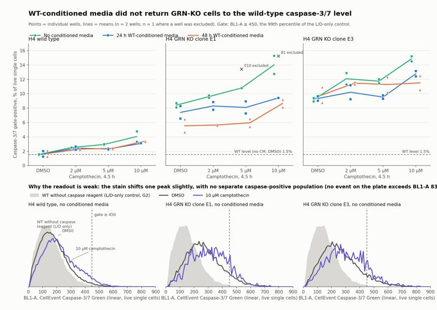
85
agent
Fixing layout problems in the figure (overlapping legend, a clipped subtitle, noisy histograms), then writing the report and answer file.
86
tool call · Bash
cd /task; python - <<'EOF'
import re
s=open('work/build.py').read()
s=s.replace("top=0.86,bottom=0.075","top=0.835,bottom=0.07")
s=s.replace("bbox_to_anchor=(0.06,0.905)","bbox_to_anchor=(0.06,0.912)")
s=s.replace("fig.text(0.065,0.965,'WT-cond","fig.text(0.065,0.975,'WT-cond").replace("fig.text(0.065,0.928,'Points","fig.text(0.065,0.938,'Points")
s=s.replace("bins=np.linspace(0,900,91)","bins=np.linspace(0,900,46)")
s=s.replace("'BL1-A, CellEvent Caspase-3/7 Green (linear, live single cells)'","'BL1-A (CellEvent Caspase-3/7 Green), live single cells'")
# drop in-plot duplicate labels
s=re.sub(r" ax.annotate\('WT without caspase.*\n","",s)
s=re.sub(r" ax.annotate\('DMSO'.*\n","",s)
s=re.sub(r" ax.annotate\('10 µM camptothecin'.*\n","",s)
s=s.replace("bbox_to_anchor=(0.06,0.388)","bbox_to_anchor=(0.06,0.365)")
s=s.replace("fig.text(0.065,0.405,'Why the readout is weak: the stain shifts one peak slightly, with no separate caspase-positive population (no event on the plate exceeds BL1-A 830)',fontsize=11,weight='bold',color=INK,va='top')",
"fig.text(0.065,0.405,'Why the readout is weak: one peak shifts slightly; there is no separate caspase-positive population',fontsize=11.5,weight='bold',color=INK,va='top')\nfig.text(0.065,0.381,'BL1-A of live single cells, pooled replicate wells. No event in any of the 78 wells exceeds BL1-A 830.',fontsize=9.5,color=INK2,va='top')")
s=s.replace("height_ratios=[1.55,1],hspace=0.42","height_ratios=[1.55,1],hspace=0.52")
open('work/build.py','w').write(s)
EOF
python work/build.py >/dev/null && echo ok87
tool call · Read
{
"file_path": "/task/outputs/figure.png"
}88
tool output
ok
89
tool output
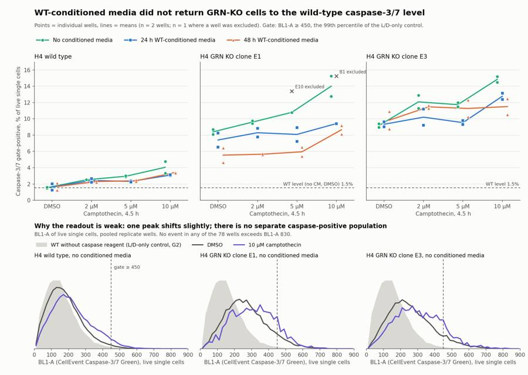
91
tool call · Bash
cd /task; cat > work/answer.py <<'EOF'
import json, pandas as pd
OUT='/task/outputs/'
CS=pd.read_csv(OUT+'condition_summary.csv').set_index('condition'); M=CS['mean']
F=pd.read_csv(OUT+'flags.csv'); excl=list(F[F.decision=='exclude'].well)
def cmp(label,a,b,direction,conf,extra=''):
d=M[a]-M[b]
return dict(comparison=label,a=a,b=b,direction=direction,
magnitude=f"{M[a]:.2f}% vs {M[b]:.2f}% caspase gate-positive of live single cells (difference {d:+.2f} percentage points; ratio {M[a]/M[b]:.2f}x){extra}",confidence=conf)
wt=M['WT_DMSO_noCM']
gap=lambda a,b: 100*(M[b]-M[a])/(M[b]-wt)
comps=[
cmp('KO clone E1 vs WT at baseline (DMSO, no conditioned media): is there a KO phenotype to rescue?','E1_DMSO_noCM','WT_DMSO_noCM','increase','medium','; seen in every well, but KO cells are also ~30% larger (FSC-A) and there is no unstained KO control, so part of this may be autofluorescence'),
cmp('KO clone E3 vs WT at baseline (DMSO, no conditioned media)','E3_DMSO_noCM','WT_DMSO_noCM','increase','medium','; same autofluorescence caveat'),
cmp('KO E1: 48 h WT-conditioned media vs no conditioned media (DMSO)','E1_DMSO_CM48hr','E1_DMSO_noCM','decrease','low',f"; closes {gap('E1_DMSO_CM48hr','E1_DMSO_noCM'):.0f}% of the gap to WT ({wt:.2f}%); wells 4.65/6.44 vs 8.11/8.70; same direction at every camptothecin dose (7 of 7 row-matched pairs, mean -4.1 points)"),
cmp('KO E1: 24 h WT-conditioned media vs no conditioned media (DMSO)','E1_DMSO_CM24hr','E1_DMSO_noCM','no_clear_change','low',f"; wells 6.54/8.27 vs 8.11/8.70 overlap; closes {gap('E1_DMSO_CM24hr','E1_DMSO_noCM'):.0f}% of the gap to WT"),
cmp('KO E3: 48 h WT-conditioned media vs no conditioned media (DMSO)','E3_DMSO_CM48hr','E3_DMSO_noCM','no_clear_change','medium','; wells 8.76/10.91 vs 8.95/9.41'),
cmp('KO E3: 24 h WT-conditioned media vs no conditioned media (DMSO)','E3_DMSO_CM24hr','E3_DMSO_noCM','no_clear_change','medium','; wells 9.64/9.03 vs 8.95/9.41'),
cmp('Best-case rescue vs the WT target: KO E1 with 48 h conditioned media vs WT without conditioned media (DMSO)','E1_DMSO_CM48hr','WT_DMSO_noCM','increase','medium','; KO remains well above WT, i.e. not restored'),
cmp('KO E1 under 10 uM camptothecin: 48 h conditioned media vs none','E1_CPT10uM_CM48hr','E1_CPT10uM_noCM','decrease','low','; wells 9.19/8.12 vs 15.27/12.76'),
cmp('KO E3 under 10 uM camptothecin: 48 h conditioned media vs none','E3_CPT10uM_CM48hr','E3_CPT10uM_noCM','decrease','low','; wells 12.49/10.54 vs 15.21/14.50; not seen at DMSO, 2 or 5 uM'),
cmp('Conditioned-media control in WT cells: 48 h conditioned media vs none (DMSO)','WT_DMSO_CM48hr','WT_DMSO_noCM','no_clear_change','medium','; wells 1.26/2.11 vs 1.48/1.60'),
cmp('Positive control: WT 10 uM camptothecin vs WT DMSO (no conditioned media)','WT_CPT10uM_noCM','WT_DMSO_noCM','increase','medium','; a tail shift of one peak (median BL1-A 204 vs 168), not a separate positive population'),
]
ans=dict(
question="Can conditioned media from wild-type (progranulin-secreting) H4 cells restore wild-type levels of caspase-3/7 activity in H4 GRN knockout cells (clones E1 and E3), at baseline and after camptothecin challenge?",
comparisons=comps,
overall_answer=(f"no: WT-conditioned media did not bring either GRN-KO clone back to the wild-type level. At baseline (DMSO) the caspase gate-positive fraction was {M['E1_DMSO_noCM']:.1f}% (E1) and {M['E3_DMSO_noCM']:.1f}% (E3) versus {wt:.1f}% in WT. Clone E3 did not change with 24 h or 48 h conditioned media ({M['E3_DMSO_CM24hr']:.1f}% and {M['E3_DMSO_CM48hr']:.1f}%). Clone E1 fell to {M['E1_DMSO_CM48hr']:.1f}% with 48 h media (about 40% of the gap to WT) and to {M['E1_DMSO_CM24hr']:.1f}% with 24 h media, still 3.6-4.8x the WT level. This 'no' is provisional: no well contains a resolved caspase-positive population, so the readout is a small shift of one peak and the plate cannot exclude a real rescue."),
assay_verdict="needs_optimisation",
next_action="repeat_with_change",
next_change=dict(
what="Cell harvest step before staining (handling of detached cells)",
**{"from":"Culture media aspirated and the PBS wash discarded; only the trypsinised adherent cells are stained and acquired"},
to="Collect the culture media and the PBS wash from each well and pool them with the trypsinised cells before the 200 x g spin, so detached cells are stained and acquired too",
why=("Camptothecin removed most cells from the analysed sample without producing any caspase-bright cells: live single cells recovered at 10 uM were 10-33% of the DMSO well in the KO clones and 25-59% in WT, the share of events in the cells gate fell from 92% to about 63% (WT) and from 84% to about 33% (E1), yet no event in any of the 78 wells exceeds BL1-A 830 and the 10 uM median rises only 168 to 204 in WT. The protocol discards detached cells, which are the ones most likely to be caspase-3/7 positive, so the assay measures the survivors. Keeping them is the single change most likely to give the positive control a real caspase-positive population; without one the rescue question cannot be read.")),
excluded_wells=excl,
caveats=[
"No resolved caspase-positive population in any well: the caspase-only control (G3) differs from unstained (G1) by median BL1-A 171 vs 136, and the maximum BL1-A on the whole plate is 830. The metric is the tail of one peak above a threshold set on the WT L/D-only control (BL1-A >= 450).",
"The KO-vs-WT difference may be partly autofluorescence: KO cells are larger (median FSC-A about 385,000-405,000 vs 297,000 in WT DMSO wells), BL1 tracks cell size, and unstained and single-stain controls were run for WT only.",
"Conditioned-media condition is fully confounded with plate position and acquisition order (24 h = columns 1-4, 48 h = columns 5-8, none = columns 9-12); WT cells also read slightly lower with conditioned media under camptothecin (mean -0.3 to -0.4 points), so the small decreases are not specific to progranulin replacement.",
"The rescue sign
… [1,617 more characters not shown]92
tool output
E1_DMSO_noCM WT_DMSO_noCM increase 8.40% vs 1.54% caspase gate-positive of live single cells (difference +6.86 percentage poi
E3_DMSO_noCM WT_DMSO_noCM increase 9.18% vs 1.54% caspase gate-positive of live single cells (difference +7.64 percentage poi
E1_DMSO_CM48hr E1_DMSO_noCM decrease 5.55% vs 8.40% caspase gate-positive of live single cells (difference -2.86 percentage poi
E1_DMSO_CM24hr E1_DMSO_noCM no_clear_change 7.40% vs 8.40% caspase gate-positive of live single cells (difference -1.00 percentage poi
E3_DMSO_CM48hr E3_DMSO_noCM no_clear_change 9.84% vs 9.18% caspase gate-positive of live single cells (difference +0.66 percentage poi
E3_DMSO_CM24hr E3_DMSO_noCM no_clear_change 9.34% vs 9.18% caspase gate-positive of live single cells (difference +0.16 percentage poi
E1_DMSO_CM48hr WT_DMSO_noCM increase 5.55% vs 1.54% caspase gate-positive of live single cells (difference +4.01 percentage poi
E1_CPT10uM_CM48hr E1_CPT10uM_noCM decrease 8.66% vs 14.02% caspase gate-positive of live single cells (difference -5.36 percentage po
E3_CPT10uM_CM48hr E3_CPT10uM_noCM decrease 11.51% vs 14.85% caspase gate-positive of live single cells (difference -3.34 percentage p
WT_DMSO_CM48hr WT_DMSO_noCM no_clear_change 1.69% vs 1.54% caspase gate-positive of live single cells (difference +0.14 percentage poi
WT_CPT10uM_noCM WT_DMSO_noCM increase 4.05% vs 1.54% caspase gate-positive of live single cells (difference +2.51 percentage poi
count 72.000000
mean 0.567747
std 0.381388
min 0.031114
25% 0.313186
50% 0.506358
75% 0.726586
max 2.068265
dtype: float64
line cm
E1 24hr 33/29
48hr 21/21
none 14/10
E3 24hr 55/26
48hr 19/14
none 15/12
WT 24hr 59/57
48hr 28/21
none 35/25
Name: recov, dtype: object
line cpt
E1 10uM 34.0
2uM 42.0
5uM 45.0
DMSO 81.0
E3 10uM 38.0
2uM 55.0
5uM 53.0
DMSO 73.0
WT 10uM 65.0
2uM 59.0
5uM 65.0
DMSO 92.0
Name: pct_cells, dtype: float64
line cpt
E1 10uM 353000.0
2uM 358000.0
5uM 365000.0
DMSO 382000.0
E3 10uM 359000.0
2uM 383000.0
5uM 373000.0
DMSO 400000.0
WT 10uM 293000.0
2uM 290000.0
5uM 289000.0
DMSO 298000.0
Name: live_fsc_median, dtype: float6494
tool call · Bash
cd /task; python - <<'EOF'
s=open('work/answer.py').read()
s=s.replace("live single cells recovered at 10 uM were 10-33% of the DMSO well in the KO clones and 25-59% in WT, the share of events in the cells gate fell from 92% to about 63% (WT) and from 84% to about 33% (E1)",
"live single cells recovered at 10 uM were 10-55% of the same-row DMSO well in the KO clones (below 22% in 8 of 11 wells) and 21-59% in WT, the share of events in the cells gate fell from 92% to about 65% (WT) and from 81% to about 34% (E1)")
s=s.replace("KO cells are larger (median FSC-A about 385,000-405,000 vs 297,000 in WT DMSO wells)","KO cells are larger (median FSC-A of live single cells about 382,000 in E1 and 400,000 in E3 vs 298,000 in WT, DMSO wells)")
s=s.replace("Camptothecin wells lost 40-90% of live single cells relative to DMSO;","The 10 uM camptothecin wells lost 41-90% of live single cells relative to the same-row DMSO well;")
open('work/answer.py','w').write(s)
EOF
python work/answer.py >/dev/null; cat > outputs/report.md <<'EOF'
# Conditioned-media caspase plate, H4 WT vs GRN KO (acquired 16-Dec-2022)
## Question
Can conditioned media (CM) collected from wild-type H4 cells for 24 h or 48 h restore wild-type levels of caspase-3/7 activity in H4 GRN knockout cells (clones E1 and E3), at baseline (DMSO) and after a 4.5 h camptothecin challenge (2, 5, 10 µM)?
**Short answer: no.** Neither KO clone came back to the WT level. Clone E3 did not respond at baseline; clone E1 dropped part of the way with 48 h CM. The answer is provisional, because the caspase stain did not resolve a positive population in any well, so the plate cannot rule out a real rescue.
## Methods
**Data.** 78 FCS 3.1 files (Attune NxT), wells A1–F12 and G1–G6. Layout from `plate_layout.csv`: rows A/D = WT, B/E = KO E1, C/F = KO E3; columns 1–4 = 24 h CM, 5–8 = 48 h CM, 9–12 = no CM; within each block camptothecin 10, 5, 2 µM, DMSO. Two wells per condition. Row G holds WT controls (unstained, L/D only, caspase only) and one stained untreated well per line.
**Channels.** The labels in the files are stale. From the plan's reagents and voltages:
| detector | label in file | what it measured |
|---|---|---|
| BL1 (225 V) | AAV-GFP | CellEvent Caspase-3/7 Green |
| BL2 (350 V) | AAdvanced livedead | SYTOX AAdvanced dead-cell stain |
**Compensation.** None (`uncompensated`). The spillover matrix in the files is the identity. SYTOX-bright cells in the L/D-only control show no BL1 increase (median BL1-A 143 in both dead and live cells of G2), so SYTOX does not leak into BL1. Leak of the caspase dye into BL2 could not be measured because no well contains caspase-bright cells.
**Gates** (one strategy for all wells, linear raw values, saved in `gates.xml`):
| population | parent | gate | role |
|---|---|---|---|
| `cells` | all events | polygon on FSC-A × SSC-A that drops debris and the low-SSC band | cells |
| `singlets` | `cells` | polygon on FSC-A × FSC-H keeping FSC-H/FSC-A ≈ 0.40–0.66 (drops doublets below and small high-ratio particles above) | singlets |
| `live` | `singlets` | BL2-A < 15,000 | live |
| `dead` | `singlets` | BL2-A ≥ 15,000 | other |
| `caspase_pos` | `live` | BL1-A ≥ 450 | marker_positive |
- The live/dead cut sits in the valley of the L/D-only control G2 (dead peak around 40,000–100,000).
- The caspase cut is the 99th percentile of live singlets in G2, the control that has everything except the caspase reagent (0.91% above the cut; unstained G1 0.83%).
**Metric.** `caspase_pos` as a percentage of `live`, per well; mean and sample SD across the replicate wells. No normalisation.
**QC.** Each well was checked for event rate over time, event counts, saturation and stain profile. All wells ran for 15.8–16.8 s with no gaps longer than 0.4 s, apart from E10 (below). In 21 wells the event rate fell in the last 0.75–1.25 s; this involves at most 155 events per well (under 1%) and was left in.
## Results
**1. The stain did not produce a caspase-positive population.**
- No event in any of the 78 wells exceeds BL1-A 830 (scale maximum 1,048,575).
- The caspase-only control (G3) is barely different from unstained (G1): median BL1-A 171 vs 136.
- 10 µM camptothecin, the positive control, moves the whole peak slightly rather than creating a second one: median BL1-A 168 → 204 in WT, 256 → 306 in E1, 244 → 294 in E3 (no CM).
- SYTOX-positive cells in fully stained wells are only about 2× brighter in BL1 than live cells (median 340 vs 177 in WT).
The percentages below are therefore the tail of one peak above a threshold, not a count of apoptotic cells.
**2. Camptothecin clearly acted on the cells, but the affected cells are missing from the analysed sample.**
| | DMSO | 10 µM camptothecin |
|---|---|---|
| Events in the `cells` gate, WT | 92% | 65% |
| Events in the `cells` gate, E1 | 81% | 34% |
| Events in the `cells` gate, E3 | 73% | 38% |
| Live singlets recovered, % of same-row DMSO well, WT | 100 | 21–59 |
| Live singlets recovered, % of same-row DMSO well, KO clones | 100 | 10–55 |
Dead cells among the singlets stay at 0.03–2.1% in every treated well. The protocol aspirates the media and discards the PBS wash before trypsinising, so detached cells never reach the cytometer.
**3. Caspase gate-positive cells, % of live singlets (mean of the wells used; individual wells in `condition_summary.csv`).**
| line | CM | DMSO | 2 µM | 5 µM | 10 µM |
|---|---|---|---|---|---|
| WT | none | 1.54 | 2.52 | 2.95 | 4.05 |
| WT | 24 h | 1.62 | 2.43 | 2.32 | 3.09 |
| WT | 48 h | 1.69 | 2.30 | 2.40 | 3.42 |
| KO E1 | none | 8.40 | 9.60 | 10.80 (n=1) | 14.02 |
| KO E1 | 24 h | 7.40 | 8.30 | 8.09 | 9.42 (n=1) |
| KO E1 | 48 h | 5.55 | 5.66 | 5.96 | 8.66 |
| KO E3 | none | 9.18 | 12.08 | 11.75 | 14.85 |
| KO E3 | 24 h | 9.34 | 10.21 | 9.54 | 12.78 |
| KO E3 | 48 h | 9.84 | 11.48 | 11.28 | 11.51 |
- **KO vs WT.** Both KO clones read 5.5–6× higher than WT at baseline (8.40% and 9.18% vs 1.54%), in every well. This matches the earli
… [6,063 more characters not shown]95
tool output
[9.31, 6.96, 5.7, 7.91, 5.91, 9.04, 12.03] min 332282.0 max 402746.0 Name: live_fsc_median, dtype: float64 well E9 854 F9 952 C5 961 F5 1006 B9 1048 E5 1120 C9 1420 B5 1676 F1 2025 Name: live, dtype: int64 min 9.508526 max 58.552134 Name: recov, dtype: float64 min 48.532810 max 87.942315 Name: recov, dtype: float64 [10.0, 12.0, 14.0, 14.0, 15.0, 19.0, 21.0, 21.0, 26.0, 29.0, 33.0, 55.0]
97
agent
Final step: correcting one count in the answer text and running a validation pass over all seven deliverables.
98
tool call · Bash
cd /task; sed -i 's/below 22% in 8 of 11 wells/below 22% in 8 of 12 wells/' work/answer.py && python work/answer.py >/dev/null; python - <<'EOF'
import pandas as pd, json, flowkit as fk, numpy as np, warnings, re
warnings.filterwarnings('ignore')
O='/task/outputs/'
lay=pd.read_csv('/task/inputs/plate_layout.csv')
gs=fk.parse_gating_xml(O+'gates.xml'); gids=[g[0] for g in gs.get_gate_ids()]
c=pd.read_csv(O+'counts.csv')
assert list(c.columns)==['file','well','population','role','parent','count','pct_of_parent']
assert set(c.file)==set(lay.file) and c.groupby('file').population.nunique().eq(6).all()
assert set(c.population)-{'all_events'}==set(gids), gids
for role in ['cells','singlets','live','marker_positive']: assert c[c.role==role].population.nunique()==1 and (c.role==role).sum()==78
# recheck counts vs gates on all files
bad=0
for _,r in lay.iterrows():
s=fk.Sample('/task/inputs/raw/'+r.file); res=gs.gate_sample(s); rep=res.report.set_index('gate_name')['count']
sub=c[c.file==r.file].set_index('population')
assert sub.loc['all_events','count']==s.event_count
for g in gids:
if int(rep[g])!=int(sub.loc[g,'count']): bad+=1
par=sub.loc[g,'parent']; assert abs(sub.loc[g,'pct_of_parent']-100*sub.loc[g,'count']/sub.loc[par,'count'])<1e-9
print('count mismatches',bad)
f=pd.read_csv(O+'flags.csv',keep_default_na=False); assert len(f)==78 and list(f.columns)==['file','well','issue_type','evidence','decision']
assert all((f.issue_type=='none')|(f.evidence.str.contains(r'\d')))
cs=pd.read_csv(O+'condition_summary.csv',keep_default_na=False); assert cs.condition.is_unique and not cs.condition.str.contains(',').any()
excl=set(f[f.decision=='exclude'].well)
for _,r in cs.iterrows():
ws=r.wells.split(';'); assert len(ws)==r.n_wells_used and not set(ws)&excl
assert (r.sd=='')==(r.n_wells_used==1)
a=json.load(open(O+'answer.json')); assert set(a['excluded_wells'])==excl
for k in a['comparisons']: assert k['a'] in set(cs.condition) and k['b'] in set(cs.condition) and re.search(r'\d',k['magnitude'])
assert a['overall_answer'].startswith('no:'); print(a['assay_verdict'],a['next_action'],a['excluded_wells'])
rep=open(O+'report.md').read(); idx=[rep.index(h) for h in ['## Question','## Methods','## Results','## Conclusion','## Caveats','## Recommendation']]; assert idx==sorted(idx)
print(f[f.issue_type!='none'][['well','issue_type','decision']].to_string()); print(f.evidence[f.well=='B9'].values[0])
import os; print(os.listdir(O))
EOF
head -3 outputs/gates.xml | cut -c1-300; ls -la inputs/raw | head -399
tool output
count mismatches 0 needs_optimisation repeat_with_change ['B1', 'E10'] well issue_type decision 12 B1 other exclude 20 B9 too_few_events keep_with_note 28 C5 too_few_events keep_with_note 32 C9 too_few_events keep_with_note 52 E5 too_few_events keep_with_note 56 E9 too_few_events keep_with_note 57 E10 other exclude 64 F5 too_few_events keep_with_note 68 F9 too_few_events keep_with_note 74 G3 bad_control keep_with_note Only 1048 live singlets (3505 total events, 38% in the cells gate) versus 7338 in the DMSO well of the same row and media block (B12); caspase_pos is based on 160 events, so the percentage carries roughly +/-1 percentage point counting error. Usable, lower precision. ['report.md', 'flags.csv', 'answer.json', 'condition_summary.csv', 'counts.csv', 'figure.png', 'gates.xml'] <?xml version='1.0' encoding='UTF-8'?> <gating:Gating-ML xmlns:gating="http://www.isac-net.org/std/Gating-ML/v2.0/gating" xmlns:data-type="http://www.isac-net.org/std/Gating-ML/v2.0/datatypes" xmlns:transforms="http://www.isac-net.org/std/Gating-ML/v2.0/transformations"> <gating:PolygonGate gating:id="cells"> total 59208 dr-xr-xr-x 2 root root 4096 Nov 10 16:58 . dr-xr-xr-x 3 root root 4096 Nov 10 16:58 ..
101
agent
The analysis is complete and all seven deliverables are in `/task/outputs/`. The answer to the plan's question is **no**: WT-conditioned media did not bring either GRN-KO clone back to the wild-type caspase-3/7 level. That "no" is provisional, because the caspase stain never resolved a positive population.
## Result
Readout is the percentage of live single cells above the caspase gate (BL1-A ≥ 450, the 99th percentile of the L/D-only control). Values are means of two wells at baseline (DMSO).
| Line | No CM | 24 h CM | 48 h CM |
|---|---|---|---|
| WT | 1.54 | 1.62 | 1.69 |
| KO E1 | 8.40 | 7.40 | 5.55 |
| KO E3 | 9.18 | 9.34 | 9.84 |
- **KO vs WT:** both clones read about 5.5–6× higher than WT in every well.
- **E3:** no change at baseline with either conditioned media.
- **E1:** 48 h media lowered the reading at every camptothecin dose (mean −4.1 points), closing about 40% of the gap to WT; it is still 3.6× WT.
- **WT:** readings also dipped slightly with conditioned media under camptothecin, so part of the decrease is not specific to replacing progranulin.
## Why the assay needs optimisation
- **No caspase-positive cells anywhere:** no event in any of the 78 wells exceeds BL1-A 830, and the caspase-only control is barely different from unstained (median 171 vs 136).
- **Weak positive control:** 10 µM camptothecin only shifts the single peak (WT median 168 → 204).
- **Affected cells are missing:** 10 µM wells kept only 10–59% of the live single cells of their DMSO well. The protocol discards the media and PBS wash, so detached cells never reach the cytometer. I infer this from the cell loss and the protocol; it was not tested directly.
- **Confounded layout:** each media condition is one fixed column block, with two wells per condition on one plate.
- **WT-only controls:** KO cells are about 30% larger, so some of the KO–WT difference may be autofluorescence.
## Wells flagged
- **B1, excluded:** the dead-cell stain appears to be missing (0.12% of singlets above BL2-A 3,000 vs 5.7–12.0% in sibling wells).
- **E10, excluded:** acquisition started 0.54 s late and the cells read about 25% larger than every other E1 well. Including it would change E1 5 µM no-media from 10.8% to 12.1% and no conclusion.
- **Seven 10 µM wells, kept with a note:** B9, C5, C9, E5, E9, F5, F9 have 854–1,420 live single cells.
- **G3, kept with a note:** the caspase-only control contains no positive cells.
## Recommendation
Repeat with one change: pool the culture media and PBS wash with the trypsinised cells before the spin, so detached cells are stained and acquired. The report also lists controls to add on the repeat plate (per-line unstained and L/D-only wells, a caspase-only well from treated cells, interleaved media conditions, progranulin measurement in the media).
## Notes on the files
- The FCS channel labels are stale: BL1 is labelled "AAV-GFP" but measured the caspase dye. Data were analysed uncompensated.
- The figure uses the charting guide's documented palette, but its colour-validation script could not run here (no Node.js), so the colours were not machine-checked.
- `counts.csv` matches the saved gates exactly on all 78 files.
Files in `/task/outputs/`:
- gates.xml
- counts.csv
- flags.csv
- condition_summary.csv
- figure.png
- report.md
- answer.json
final result
The analysis is complete and all seven deliverables are in `/task/outputs/`. The answer to the plan's question is **no**: WT-conditioned media did not bring either GRN-KO clone back to the wild-type caspase-3/7 level. That "no" is provisional, because the caspase stain never resolved a positive population. ## Result Readout is the percentage of live single cells above the caspase gate (BL1-A ≥ 450, the 99th percentile of the L/D-only control). Values are means of two wells at baseline (DMSO). | Line | No CM | 24 h CM | 48 h CM | |---|---|---|---| | WT | 1.54 | 1.62 | 1.69 | | KO E1 | 8.40 | 7.40 | 5.55 | | KO E3 | 9.18 | 9.34 | 9.84 | - **KO vs WT:** both clones read about 5.5–6× higher than WT in every well. - **E3:** no change at baseline with either conditioned media. - **E1:** 48 h media lowered the reading at every camptothecin dose (mean −4.1 points), closing about 40% of the gap to WT; it is still 3.6× WT. - **WT:** readings also dipped slightly with conditioned media under camptothecin, so part of the decrease is not specific to replacing progranulin. ## Why the assay needs optimisation - **No caspase-positive cells anywhere:** no event in any of the 78 wells exceeds BL1-A 830, and the caspase-only control is barely different from unstained (median 171 vs 136). - **Weak positive control:** 10 µM camptothecin only shifts the single peak (WT median 168 → 204). - **Affected cells are missing:** 10 µM wells kept only 10–59% of the live single cells of their DMSO well. The protocol discards the media and PBS wash, so detached cells never reach the cytometer. I infer this from the cell loss and the protocol; it was not tested directly. - **Confounded layout:** each media condition is one fixed column block, with two wells per condition on one plate. - **WT-only controls:** KO cells are about 30% larger, so some of the KO–WT difference may be autofluorescence. ## Wells flagged - **B1, excluded:** the dead-cell stain appears to be missing (0.12% of singlets above BL2-A 3,000 vs 5.7–12.0% in sibling wells). - **E10, excluded:** acquisition started 0.54 s late and the cells read about 25% larger than every other E1 well. Including it would change E1 5 µM no-media from 10.8% to 12.1% and no conclusion. - **Seven 10 µM wells, kept with a note:** B9, C5, C9, E5, E9, F5, F9 have 854–1,420 live single cells. - **G3, kept with a note:** the caspase-only control contains no positive cells. ## Recommendation Repeat with one change: pool the culture media and PBS wash with the trypsinised cells before the spin, so detached cells are stained and acquired. The report also lists controls to add on the repeat plate (per-line unstained and L/D-only wells, a caspase-only well from treated cells, interleaved media conditions, progranulin measurement in the media). ## Notes on the files - The FCS channel labels are stale: BL1 is labelled "AAV-GFP" but measured the caspase dye. Data were analysed uncompensated. - The figure uses the charting guide's documented palette, but its colour-validation script could not run here (no Node.js), so the colours were not machine-checked. - `counts.csv` matches the saved gates exactly on all 78 files. Files in `/task/outputs/`: - gates.xml - counts.csv - flags.csv - condition_summary.csv - figure.png - report.md - answer.json